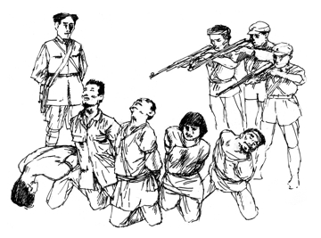
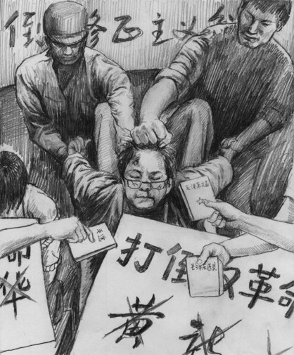

Cửu Bình 7: ĐCSTQ, một lịch sử đầy giết chóc (audio)
Tài liệu gốc: http://dajiyuan.com/gb/4/12/1/n733806.htm
0 – Dẫn nhập
1 – Đảng cộng sản là gì?
2 – Đảng cộng sản Trung Quốc xuất sinh như thế nào?
3 – Chính quyền bạo lực của Đảng cộng sản Trung Quốc.
4 – Đảng cộng sản, một lực lượng phản vũ trụ.
5 – Giang Trạch Dân và Đảng cộng sản Trung Quốc lợi dụng lẫn nhau để đàn áp Pháp Luân Công.
6 – Đảng cộng sản Trung Quốc phá hoại văn hoá dân tộc.
7 – Lịch sử giết chóc của Đảng cộng sản Trung Quốc.
8 – Bản chất tà giáo của Đảng cộng sản Trung Quốc.
9 – Bản tính lưu manh của Đảng cộng sản Trung Quốc.
Lời mở đầu
|
 |
Lịch sử 55 năm của Đảng Cộng sản Trung Quốc (ĐCSTQ) được viết bằng máu và những lời dối trá. Những câu chuyện đằng sau lịch sử đẫm máu này vừa cực kỳ bi đát vừa ít được biết đến. Dưới sự thống trị của ĐCSTQ, khoảng 60 đến 80 triệu người dân Trung Quốc vô tội đã bị giết hại, để lại đằng sau những gia đình tan nát của họ. Nhiều người không hiểu tại sao ĐCSTQ lại giết người. Trong khi ĐCSTQ đang tiếp tục sự đàn áp tàn bạo của nó đối với các học viên Pháp Luân Công và gần đây đàn áp những người biểu tình ở Hán Nguyên bằng súng đạn, nhiều người tự hỏi liệu họ có thể sẽ thấy một ngày mà ĐCSTQ học cách nói chuyện bằng lời thay vì bằng súng đạn hay không?
Mao Trạch Đông đã tóm tắt mục đích của Cách mạng Văn hóa như sau, “…sau thời đại hỗn mang, thế giới sẽ có hòa bình, nhưng cứ khoảng 7 – 8 năm, sự hỗn loạn lại cần phải xảy ra.” [1] Nói cách khác, nên có một cuộc cách mạng về chính trị khoảng 7 – 8 năm một lần và cần phải giết chết một số người nào đó khoảng 7 – 8 năm một lần.
Có một ý thức hệ hỗ trợ và các yêu cầu thực tiễn nằm sau sự chém giết của ĐCSTQ.
Về phương diện ý thức hệ, ĐCSTQ tin vào “chế độ chuyên chính vô sản” và “liên tục cách mạng dưới chế độ chuyên chính vô sản”. Do đó, sau khi ĐCSTQ lên nắm quyền ở Trung Quốc, nó đã giết chết những người sở hữu đất đai (địa chủ) để giải quyết vấn đề về các mối quan hệ sản xuất ở nông thôn. Nó đã giết hại các nhà tư sản để đạt mục đích cải cách công thương và giải quyết các mối quan hệ sản xuất ở thành thị. Sau khi hai giai cấp này bị tiêu diệt, các vấn đề liên quan đến nền tảng kinh tế về cơ bản đã được giải quyết. Tương tự như vậy, giải quyết các vấn đề liên quan đến thượng tầng kiến trúc [2] cũng cần phải chém giết. Cuộc đàn áp Nhóm chống Đảng Hồ Phong [3] và Phong trào chống cánh hữu đã tiêu diệt những người trí thức. Việc giết hại những tín đồ Cơ đốc giáo, những người tu Đạo, các Phật tử và những người dân tộc đã giải quyết các vấn đề tôn giáo. Các cuộc tàn sát trên diện rộng trong thời kỳ Cách mạng Văn hóa đã thiết lập được quyền lãnh đạo tuyệt đối của ĐCSTQ về chính trị và văn hóa. Cuộc thảm sát trên Quảng trường Thiên An Môn năm 1989 được dùng để ngăn chặn cuộc khủng hoảng chính trị và đè bẹp sự đòi hỏi dân chủ. Chiến dịch đàn áp Pháp Luân Công nhằm giải quyết các vấn đề về tín ngưỡng và cách chữa bệnh truyền thống. Tất cả những hành động này đều nhằm để củng cố quyền lực của ĐCSTQ và duy trì sự thống trị của nó khi nó liên tục phải đối mặt với các cuộc khủng hoảng về tài chính (giá cả các mặt hàng tiêu dùng tăng vọt sau khi ĐCSTQ lên nắm quyền và nền kinh tế Trung Quốc gần như đã sụp đổ sau thời kỳ Cách mạng Văn hóa), khủng hoảng về chính trị (một số người không nghe theo lệnh của Đảng hay muốn chia sẻ quyền lực chính trị với Đảng) hoặc khủng hoảng về niềm tin (sự tan rã của Liên-Xô cũ, các biến động chính trị ở Đông Âu, và vấn đề Pháp Luân Công). Trừ vấn đề Pháp Luân Công ra, hầu như tất cả các phong trào chính trị trước đó đều được dùng để làm sống lại bóng ma tà ác của ĐCSTQ và kích động tham vọng cách mạng của nó. ĐCSTQ cũng đã sử dụng những phong trào chính trị này để thử lòng các đảng viên ĐCSTQ và tiêu diệt những người không đạt yêu cầu của Đảng.
Việc chém giết cũng được thực hiện với những lý do thiết thực. Đảng Cộng sản được thành lập bởi những kẻ lưu manh giết người để giành quyền lực. Một khi tiền lệ này đã được đặt ra thì không còn có đường lui. Việc khủng bố liên miên đã được sử dụng để đe dọa nhân dân và buộc họ vì sợ hãi mà chấp nhận quyền thống trị tuyệt đối của ĐCSTQ.
Trên bề mặt, có vẻ như là ĐCSTQ “bắt buộc phải giết chóc” và rằng nhiều sự kiện đã tình cờ kích động bóng ma tà ác của ĐCSTQ và ngẫu nhiên châm ngòi nổ cho cỗ máy giết người của ĐCSTQ. Thực tế là, những sự kiện này đã được dùng để ngụy trang cho nhu cầu giết chóc của Đảng, và ĐCSTQ cần phải giết chóc theo định kỳ. Nếu không có những bài học đau đớn này, mọi người có thể đã bắt đầu nghĩ rằng ĐCSTQ đang tiến bộ lên và bắt đầu đòi hỏi quyền dân chủ như những sinh viên với những suy nghĩ quá lý tưởng hóa trong phong trào dân chủ năm 1989 đã làm. Việc giết chóc 7 – 8 năm một lần là để gợi nhớ lại sự khủng bố trong tâm trí của nhân dân và có thể cảnh cáo thế hệ trẻ: bất cứ ai chống lại ĐCSTQ, muốn thách thức quyền lãnh đạo tuyệt đối của ĐCSTQ, hoặc cố nói ra sự thật về lịch sử của Trung Quốc, sẽ phải nếm mùi “quả đấm sắt của chế độ chuyên chính vô sản”.
Giết chóc đã trở thành một trong những cách cần thiết nhất để ĐCSTQ duy trì quyền lực của nó. Với sự leo thang nợ máu của nó, thì việc hạ lưỡi dao đồ tể của nó xuống sẽ khuyến khích nhân dân báo thù vì những tội ác của ĐCSTQ. Do đó, ĐCSTQ không chỉ giết hại nhiều người mà còn giết hại một cách tàn ác nhất để đe dọa nhân dân một cách rất hiệu lực đặc biệt là vào thời kỳ đầu khi ĐCSTQ đang thiết lập quyền thống trị của nó.
Bởi vì mục đích của chém giết là để tạo ra khủng bố tối đa, ĐCSTQ đã lựa chọn các mục tiêu để hủy diệt một cách tùy tiện và bừa bãi. Trong phong trào cách mạng nào cũng vậy, ĐCSTQ đều sử dụng chiến lược diệt chủng. Hãy lấy “trấn áp các phần tử phản động” làm ví dụ. ĐCSTQ đã không thực sự trấn áp “những hành động” phản động mà là “những người” mà ĐCSTQ gọi là phản động. Nếu ai đã gia nhập và phục vụ vài ngày trong quân đội của Quốc Dân Đảng nhưng tuyệt đối không làm gì liên quan đến chính trị sau khi ĐCSTQ đã giành được quyền lực, người này vẫn sẽ bị giết chết vì “lịch sử phản động” của mình. Trong quá trình cải cách ruộng đất, để gỡ bỏ “gốc rễ của vấn đề”, ĐCSTQ thường giết cả gia đình của những người chủ sở hữu đất (địa chủ).
Kể từ khi giành được chính quyền năm 1949 cho đến nay, ĐCSTQ đã đàn áp hơn một nửa nhân dân Trung Quốc. Ước tính khoảng từ 60 đến 80 triệu người đã bị chết bất thường. Con số này vượt trên cả tổng số người chết trong cả hai cuộc chiến tranh thế giới cộng lại.
Cũng như ở những nước cộng sản khác, việc chém giết tùy tiện của ĐCSTQ cũng bao gồm cả việc giết hại tàn bạo những đảng viên của chính nó để tiêu diệt những người bất đồng chính kiến coi trọng nhân tính hơn đảng tính. Chế độ cai trị bằng khủng bố của ĐCSTQ đàn áp cả nhân dân và các đảng viên của chính nó để duy trì một “pháo đài bất khả chiến bại”.
Trong một xã hội bình thường, mọi người bày tỏ sự quan tâm và tình cảm với nhau, sống trong sự tôn kính và biết ơn Chúa. Ở phương Đông, mọi người nói, “Đừng bao giờ gây ra cho người khác điều gì mà chính bản thân mình không muốn nhận nó”. [4] Ở phương Tây, mọi người nói, “Hãy yêu thương hàng xóm láng giềng của mình như yêu chính bản thân mình”. [5] Nhưng ngược lại, ĐCSTQ có quan điểm rằng “Lịch sử của tất cả các xã hội tồn tại cho đến ngày hôm nay là lịch sử của các cuộc đấu tranh giai cấp”. [6] Để giữ cho “các cuộc đấu tranh” luôn luôn sống trong xã hội thì phải tạo ra sự thù hận. ĐCSTQ không chỉ giết người mà nó còn khuyến khích nhân dân chém giết lẫn nhau. Nó cố làm cho mọi người trở nên thờ ơ lãnh đạm với nỗi đau khổ của người khác bằng cách bao vây người ta trong giết chóc liên miên. Nó muốn mọi người trở nên bị tê liệt do thường xuyên phải đối mặt với những sự tàn ác vô nhân đạo, và hình thành một tâm lý rằng “điều tốt nhất mà ta có thể hy vọng là không bị đàn áp”. Tất cả những bài học từ những cuộc đàn áp dã man này đã cho phép ĐCSTQ duy trì được quyền thống trị của nó.
Cùng với việc hủy diệt vô số nhân mạng, ĐCSTQ cũng đã hủy hoại tâm hồn của nhân dân Trung Quốc. Có rất nhiều người do quá sợ hãi trước những đe dọa của ĐCSTQ nên đã không dám có phản ứng gì ngoài việc hoàn toàn từ bỏ những lý lẽ và nguyên tắc của bản thân mình. Về một khía cạnh nào đó, tâm hồn của những người này đã chết: một điều còn đáng sợ hơn cả cái chết của thể xác.
******************
I. Những cuộc thảm sát khủng khiếp
Trước khi ĐCSTQ lên nắm quyền, Mao Trạch Đông đã viết, “Chúng ta tuyệt đối không áp dụng chính sách nhân từ đối với các phần tử phản động và đối với các hoạt động phản động của các giai cấp phản động.” [7] Nói cách khác, ngay cả trước khi ĐCSTQ chiếm được Bắc Kinh, nó đã quyết định trong đầu là sẽ hành động tàn bạo dưới cách nói khéo là “chế độ chuyên chính dân chủ nhân dân”. Sau đây là một vài ví dụ.
Đàn áp những phần tử phản động và cải cách ruộng đất
Vào tháng 3 năm 1950, ĐCSTQ công bố “Lệnh đàn áp nghiêm khắc các phần tử phản động”, được biết đến trong lịch sử với cái tên phong trào “đàn áp các phần tử phản động”.
Không như các hoàng đế ân xá cho toàn bộ đất nước sau khi lên ngôi, ĐCSTQ bắt đầu chém giết ngay sau khi nó lên nắm quyền. Mao Trạch Đông nói trong một tài liệu, “Còn có rất nhiều nơi mà ở đó nhân dân bị đe dọa nên không dám giết các phần tử phản động một cách công khai trên diện rộng.” [8] Vào tháng 2 năm 1951, Trung ương ĐCSTQ nói rằng ngoại trừ tỉnh Triết Giang và phía nam tỉnh An Huy, “các khu vực khác mà ở đó vẫn chưa giết đủ, đặc biệt là ở các thành phố lớn và vừa, nên tiếp tục bắt và giết một số lượng lớn và không nên dừng sớm quá.” Mao Trạch Đông thậm chí còn đề xuất rằng “ở các khu vực nông thôn, để giết các phần tử phản động, nên giết hơn một phần nghìn tổng số dân… ở các thành phố, nên giết ít hơn một phần nghìn.” [9] Dân số Trung Quốc vào thời gian đó là khoảng 600 triệu người; “chỉ dụ” này của Mao Trạch Đông sẽ giết chết ít nhất là 600 nghìn người. Không một ai biết tỉ lệ 1/1000 này là ở đâu ra. Có thể là Mao Trạch Đông đã chợt nảy ra quyết định rằng 600 nghìn nhân mạng là đủ cho việc đặt nền tảng để tạo ra nỗi sợ hãi trong nhân dân, nên đã ra lệnh thực hiện như thế.
ĐCSTQ không quan tâm đến việc liệu những người bị giết có thực sự đáng phải chết hay không. “Quy định của Nước Cộng hòa Nhân dân Trung hoa về việc trừng phạt các phần tử phản động” công bố năm 1951 thậm chí còn nói rằng những người “phao tin đồn” có thể bị “tử hình ngay lập tức”.
Trong khi cuộc đàn áp các phần tử phản động đang được thực hiện một cách kịch liệt, thì việc cải cách ruộng đất cũng đang diễn ra trên diện rộng. Trên thực tế, ĐCSTQ đã bắt đầu cải cách ruộng đất trong các khu vực do nó chiếm đóng vào cuối những năm 1920. Trên bề mặt, cải cách ruộng đất, trông có vẻ như ủng hộ một lý tưởng tương tự như ở thời kỳ Thái Bình Thiên Quốc [10], gọi là, tất cả mọi người đều sẽ có đất để trồng trọt nhưng thực ra nó chỉ là một cái cớ để chém giết. Đào Chú, đứng thứ tư trong hàng ngũ ĐCSTQ, sau đó có một khẩu hiệu cho cải cách ruộng đất là: “Làng nào cũng đổ máu, nhà nào cũng đánh nhau,” cho thấy rằng làng nào cũng có những người sở hữu đất đai (địa chủ) phải chết.
Cải cách ruộng đất đã có thể được thực hiện mà không cần phải chém giết. Nó đã có thể được thực hiện đúng theo cách mà chính phủ Đài Loan đã thực hiện chính sách cải cách ruộng đất của mình bằng cách mua lại đất từ những người chủ sở hữu đất đai (địa chủ). Tuy nhiên, bởi vì ĐCSTQ bắt nguồn từ một nhóm lưu manh côn đồ vô sản, nó chỉ có biết cướp bóc. Sợ rằng nó có thể bị trả thù vì những hành động cướp bóc của mình, ĐCSTQ đã giết chết các nạn nhân để loại trừ nguồn gốc của các rắc rối có thể xảy ra sau này.
Cách giết người phổ biến nhất được biết đến trong thời kỳ cải cách ruộng đất là “đấu tố”. ĐCSTQ làm giả tội danh và đổ tội cho những người chủ sở hữu đất đai (địa chủ) hoặc những người nông dân giàu có. Cộng đồng sau đó sẽ được hỏi xem là họ nên bị trừng phạt như thế nào. Một số đảng viên hoặc những người hoạt động cho ĐCSTQ đã được gài trong những đám đông để hô “Chúng ta nên giết họ!” và những người chủ sở hữu đất đai và những nông dân giàu có sau đó đã bị xử tử ngay tại chỗ. Vào thời kỳ đó, bất kể người nào sở hữu đất đai ở trong làng cũng đều bị coi là “cường hào”. Những người thường lợi dụng nông dân bị gọi là “cường hào bủn xỉn”; những người thường giúp sửa chữa những tiện nghi công cộng và tặng tiền cho các trường học và giúp đỡ trong việc giảm nhẹ thiên tai được gọi là “cường hào tốt bụng”; những người không làm gì cả bị gọi là “cường hào im lặng”. Việc phân loại như thế này không có ý nghĩa gì cả, bởi vì tất cả các loại “cường hào” cuối cùng đều bị xử tử ngay lập tức bất kể là họ thuộc vào loại “cường hào” nào.
Vào khoảng cuối năm 1952, số phần tử phản động bị xử tử do ĐCSTQ công bố là vào khoảng 2.4 triệu người. Thực ra, tổng số người chết bao gồm các quan chức chính quyền cũ của Quốc Dân Đảng dưới cấp huyện và những người chủ sở hữu đất đai (địa chủ) ít nhất là 5 triệu người.
Cuộc đàn áp các phần tử phản động và cải cách ruộng đất có ba kết quả trực tiếp. Thứ nhất là, các cựu quan chức địa phương được lựa chọn trong hệ thống tự trị trên cơ sở thị tộc đã bị tiêu diệt. Thông qua việc đàn áp các phần tử phản động và cải cách ruộng đất, ĐCSTQ đã giết hại tất cả những người quản lý trong chế độ trước và thực hiện được việc kiểm soát hoàn toàn đối với các khu vực nông thôn bằng cách thiết lập các chi bộ đảng ở từng làng xã. Thứ hai là, ĐCSTQ đã chiếm được một lượng của cải khổng lồ bằng con đường trộm cướp trong cuộc đàn áp các phần tử phản động và cải cách ruộng đất. Thứ ba là, dân thường đã bị khủng bố bởi sự đàn áp dã man những người chủ sở hữu đất đai (địa chủ) và những nông dân giàu có.
“Chiến dịch Tam Phản” và “Chiến dịch Ngũ Phản”
Cuộc đàn áp các phần tử phản động và cải cách ruộng đất chủ yếu là nhằm vào các khu vực nông thôn, còn “Chiến dịch Tam Phản” và “Chiến dịch Ngũ Phản” sau đó có thể được coi là sự diệt chủng tương tự ở thành thị.
“Chiến dịch Tam Phản” được bắt đầu vào tháng 12 năm 1951 và nhằm vào nạn tham nhũng, lãng phí và quan liêu trong số những cán bộ của ĐCSTQ. Một số quan chức tham nhũng của ĐCSTQ đã bị tử hình. Không lâu sau đó, ĐCSTQ đã quy tội rằng sự tham nhũng của các quan chức chính quyền của nó là do sự cám dỗ của các nhà tư sản. Tương tự như vậy, “Chiến dịch Ngũ Phản” được bắt đầu vào tháng 1 năm 1952 nhằm vào nạn hối lộ, trốn thuế, trộm cắp tài sản nhà nước, sự xây dựng vội vàng và cẩu thả bằng vật liệu xấu, và tội làm gián điệp thu thập các thông tin kinh tế của nhà nước.
“Chiến dịch Ngũ Phản” về cơ bản là chiến dịch ăn cắp tài sản của các nhà tư sản hay đúng hơn là chiến dịch giết hại các nhà tư sản để lấy tiền của họ. Trần Nghị, thị trưởng Thượng Hải lúc bấy giờ, được báo cáo vắn tắt tình hình trên ghế sô-fa với một cốc trà trong tay hàng đêm. Ông ta hỏi một cách nhàn nhã, “Có bao nhiêu lính dù hôm nay?” có nghĩa là “Có bao nhiêu thương gia nhảy lầu tự tử trong ngày hôm nay?” Không một nhà tư sản nào có thể trốn thoát “Chiến dịch Ngũ Phản”. Họ bị yêu cầu phải đóng thuế mà họ “đã trốn” từ tận thời Quang Tự (1875-1908) trong Triều đại nhà Thanh (1644-1911) khi thị trường thương mại Thượng Hải mới bắt đầu được thành lập. Các nhà tư sản không thể có cách nào để trả những thứ “thuế” đó thậm chí bằng tất cả tài sản của họ. Họ không có cách nào khác hơn là tự kết liễu cuộc đời của mình, nhưng họ không dám nhảy xuống sông Hoàng Phố. Nếu xác của họ mà không được tìm thấy, ĐCSTQ sẽ buộc tội họ là chạy trốn sang Hồng Công, và người nhà của họ sẽ vẫn phải chịu trách nhiệm trả những khoản thuế đó. Các nhà tư sản đành phải nhảy lầu và để lại xác cho ĐCSTQ thấy bằng chứng về cái chết của họ. Người ta nói rằng mọi người không dám đi bộ bên cạnh các tòa nhà cao tầng ở Thượng Hải thời bấy giờ vì sợ bị những người nhảy lầu từ trên cao xuống rơi vào mình.
Theo Sự thực về các chiến dịch chính trị sau khi thành lập Nước Cộng hòa Nhân dân Trung Hoa đồng biên soạn bởi 4 cơ quan chính phủ trong đó có Trung tâm Nghiên cứu Lịch sử ĐCSTQ năm 1996, trong thời kỳ “Chiến dịch Tam Phản” và “Chiến dịch Ngũ Phản”, hơn 323100 người đã bị bắt và hơn 280 người đã tự tử hay mất tích. Trong “Chiến dịch chống Hồ Phong” năm 1955, hơn 5000 đã bị buộc tội, hơn 500 người đã bị bắt, hơn 60 người đã tự tử, và 12 người đã chết bất bình thường. Trong cuộc đàn áp các phần tử phản động sau đó, hơn 21300 người đã bị tử hình, và hơn 4300 người đã tự tử hoặc mất tích. [11]
Nạn đói khủng khiếp
Số người chết nhiều nhất được ghi chép là trong Nạn đói khủng khiếp ở Trung Quốc xảy ra ngay sau chiến dịch Đại nhảy vọt. [12] Bài “Nạn đói khủng khiếp” trong quyển Những ghi chép về lịch sử của Nước Cộng hòa Nhân dân Trung Hoa nói rằng “Số người chết bất bình thường và số người mới được sinh ra giảm từ năm 1959 cho đến năm 1961 được ước tính là khoảng 40 triệu… việc giảm 40 triệu người ở Trung Quốc nhiều khả năng là nạn đói khủng khiếp nhất trên thế giới trong thế kỷ này.” [13]
Nạn đói khủng khiếp đã bị ĐCSTQ ngụy trang gọi là “Thiên tai 3 năm”. Trên thực tế, 3 năm đó có điều kiện thời tiết tốt mà không có bất cứ một thiên tai lớn nào như lũ lụt, hạn hán, bão, sóng thần, động đất, sương giá, mưa đá, hay nạn chấu chấu. “Tai họa” đó hoàn toàn là do con người gây nên. Chiến dịch Đại nhảy vọt đã yêu cầu mọi người ở Trung Quốc phải tham gia luyện thép, buộc nông dân phải bỏ cả hoa màu thối rữa ở ngoài đồng. Đã thế, các quan chức ở các khu vực lại còn tăng thuế suất trên sản lượng hoa màu. Hạ Diệc Nhiên, Bí thư thứ nhất Đảng bộ quận Liễu Châu đã tự bịa đặt ra mức sản lượng gây sửng sốt “65000 cân thóc trên một mẫu” [14] ở huyện Hoàn Giang. Việc này xảy ra ngay sau Hội nghị toàn thể Lộc Sơn khi phong trào chống cánh hữu của ĐCSTQ lan ra trên toàn quốc. Để cho mọi người thấy rằng ĐCSTQ luôn luôn đúng, hoa màu đã bị chính quyền sung công như một hình thức đánh thuế theo sản lượng đã bị thổi phồng lên này. Hậu quả là, khẩu phần ngũ cốc, giống và lương thực chủ yếu của nông dân tất cả đều đã bị sung công. Khi yêu cầu vẫn chưa được đáp ứng đủ, nông dân còn bị buộc tội là đã giấu hoa màu của mình đi.
Hạ Diệc Nhiên đã từng nói là phải phấn đấu giành giải nhất trong cuộc thi sản lượng cao nhất bất kể là bao nhiêu người ở Liễu Châu sẽ phải chết. Một số nông dân đã bị cướp đi tất cả, chỉ còn lại một chút gạo được giấu ở trong chậu đựng nước tiểu. Đảng bộ xã Thuần Lạc, huyện Hoàn Giang thậm chí còn ra lệnh cấm nấu cơm để ngăn nông dân không được ăn hoa màu. Việc tuần tra đã được dân quân thực hiện vào ban đêm. Hễ họ thấy có ánh lửa là họ sẽ tiến hành lục soát và vây bắt. Nhiều nông dân thậm chí còn không dám nấu thảo mộc hoặc vỏ cây để ăn và đã bị chết đói.
Trong lịch sử, vào những lúc có nạn đói, vua quan sẽ cấp cháo, phân phát hoa màu và cho phép các nạn nhân di tản khỏi những khu vực có nạn đói. Còn ĐCSTQ lại coi việc chạy khỏi nơi có nạn đói là một điều ô nhục đối với uy tín của đảng, và đã ra lệnh cho dân quân chặn đường không cho các nạn nhân chạy thoát khỏi các khu vực có nạn đói. Khi các nông dân bị đói quá nên phải cướp ngũ cốc ở các kho lương thực, ĐCSTQ đã ra lệnh bắn vào đám đông để trấn áp việc cướp thóc gạo và dán nhãn cho những người bị chết là các phần tử phản cách mạng. Một số lượng lớn nông dân đã bị chết đói ở nhiều tỉnh gồm có Cam Túc, Sơn Đông, Hà Nam, An Huy, Hồ Bắc, Hồ Nam, Tứ Xuyên, và Quảng Tây. Nông dân đã bị đói nhưng vẫn còn bị bắt phải tham gia làm các việc như tưới nước, xây đập và luyện thép. Nhiều người đã bị ngã xuống đất trong khi đang làm việc và đã không bao giờ đứng lên được nữa. Cuối cùng thì cả những người sống sót cũng không còn có đủ sức để chôn những người bị chết. Nhiều làng đã bị chết toàn bộ khi mọi người lần lượt bị chết vì đói.
Trong các nạn đói nghiêm trọng nhất trong lịch sử Trung Quốc trước thời ĐCSTQ, có những trường hợp các gia đình đã phải trao đổi con cho nhau để ăn thịt nhưng không ai đã từng ăn thịt chính con cái mình. Tuy nhiên dưới thời ĐCSTQ, mọi người đã buộc phải ăn thịt cả những người bị chết, ăn thịt những người chạy trốn đến từ những khu vực khác, và thậm chí đã phải giết chết và ăn thịt con cái của chính mình. Nhà văn Sa Thanh đã mô tả cảnh này trong tác phẩm của ông có tên là Y Hy Đại Địa Loan (Một eo đất thưa thớt) như sau: Trong một gia đình nông dân, người cha chỉ còn lại một đứa con trai và một đứa con gái trong Nạn đói khủng khiếp. Một hôm, người cha đuổi đứa con gái ra khỏi nhà. Khi cô trở về, cô không thể tìm thấy người em trai mà chỉ nhìn thấy mỡ trắng nổi ở trong chảo và một đống xương ở bên cạnh bếp. Vài ngày sau, người cha đổ thêm nước vào chảo, và gọi đứa con gái lại gần. Cô gái sợ quá và xin cha cô từ ngoài cửa, “Bố, đừng ăn thịt con. Con có thể kiếm củi và nấu cơm cho bố ăn. Nếu bố ăn thịt con, thì sẽ không còn ai làm việc này cho bố nữa.”
Cấp độ cuối cùng và số lượng thảm kịch tương tự như thế này thì không ai biết được. Thế nhưng ĐCSTQ vẫn coi đó như là một vinh dự cao quý và còn tuyên bố rằng ĐCSTQ đã lãnh đạo nhân dân dũng cảm chống lại “thiên tai” và vẫn tiếp tục tự khen mình là “vĩ đại, vinh quang và đúng đắn”.
Sau Hội nghị toàn thể Lộc Sơn năm 1959, tướng Bành Đức Hoài [15] đã bị tước quyền vì đã lên tiếng bênh vực nhân dân. Một số quan chức và cán bộ chính quyền dám nói lên sự thực đã bị bãi chức, bị bắt giam hoặc bị điều tra. Sau đó, không ai còn dám nói lên sự thực nữa. Vào thời Nạn đói khủng khiếp, thay vì báo cáo sự thực, các quan chức ĐCSTQ đã che đậy thực tế về số lượng người chết đói để bảo vệ chức vụ của mình. Tỉnh Cam Túc thậm chí còn từ chối không nhận viện trợ lương thực của tỉnh Sơn Tây và nói rằng Cam Túc đã có một lượng dự trữ lương thực rất lớn.
Nạn đói khủng khiếp này cũng là một cuộc thi loại đối với các cán bộ của ĐCSTQ. Theo tiêu chuẩn của ĐCSTQ thì những cán bộ chống lại việc nói lên sự thực bất chấp cả việc hàng chục triệu người bị chết đói chắc chắn là đã “đạt tiêu chuẩn”. Với cuộc trắc nghiệm này, ĐCSTQ sau đó sẽ tin rằng không có gì như tình người hay đạo trời có thể trở thành một gánh nặng tâm lý ngăn cản những cán bộ này đi theo đảng. Sau Nạn đói khủng khiếp, các quan chức cấp tỉnh có trách nhiệm chỉ đơn thuần tham gia làm thủ tục tự phê bình. Lý Tỉnh Tuyền, Bí thư tỉnh ủy Tứ xuyên nơi có hàng triệu người bị chết đói đã được thăng chức lên làm Bí thư thứ nhất Văn phòng khu vực Tây Nam của ĐCSTQ.
Từ Cách mạng Văn hóa và cuộc thảm sát trên quảng trường Thiên An Môn cho đến cuộc đàn áp Pháp Luân Công
Cuộc cách mạng văn hóa đã chính thức bắt đầu vào ngày 16/05/1966 và kéo dài cho đến tận năm 1976. Thậm chí chính ĐCSTQ cũng gọi thời kỳ này là “Thảm họa 10 năm”. Sau này trong một cuộc phỏng vấn với một phóng viên Nam-tư, Hồ Diệu Bang, nguyên tổng bí thư ĐCSTQ nói, “Vào thời gian đó, gần 100 triệu người đã bị liên can, tức là một phần mười tổng số dân của Trung Quốc.”
|
 |
Sự thực về các chiến dịch chính trị sau khi thành lập Nước Cộng hòa Nhân dân Trung Hoa viết rằng, “Vào tháng 5 năm 1984, sau 31 tháng tập trung điều tra, thẩm tra và tính toán lại bởi Ban chấp hành Trung ương ĐCSTQ, các con số liên quan đến Cách mạng Văn hóa là: hơn 4,2 triệu người đã bị giam giữ và điều tra; hơn 1.728.000 người đã bị chết bất thường; hơn 135.000 người đã bị dán nhãn hiệu là phản cách mạng và bị tử hình; hơn 237.000 người đã bị chết và hơn 7,03 triệu người đã bị tàn phế trong các cuộc tấn công vũ trang; và 71.200 gia đình đã bị tiêu diệt.” Thống kê tổng hợp từ những ghi chép lịch sử của các huyện đã cho thấy rằng 7,73 triệu người đã bị chết bất thường trong Cách mạng Văn hóa.
Bên cạnh việc đánh đập người ta đến chết, sự bắt đầu của Cách mạng Văn hóa cũng đã gây ra một làn sóng tự tử. Nhiều trí thức nổi tiếng, bao gồm Lão Xả, Phó Lôi, Tiễn Bá Tán, Wu Han và Trữ An Bình tất cả đều đã tự chấm dứt cuộc đời của mình vào thời kỳ đầu của Cách mạng Văn hóa.
Cách mạng Văn hóa là thời kỳ cực tả điên cuồng nhất ở Trung Quốc. Chém giết đã trở thành một cách cạnh tranh để bày tỏ vị trí cách mạng của cá nhân, nên việc tàn sát “các kẻ thù giai cấp” là cực kỳ tàn bạo và độc ác.
Chính sách “cải cách và mở cửa” đã làm tăng đáng kể sự trao đổi thông tin, đã cho phép nhiều phóng viên nước ngoài chứng kiến cuộc thảm sát trên quảng trường Thiên An Môn năm 1989 và phát đi các chương trình truyền hình cho thấy xe tăng đã săn đuổi và đè chết các sinh viên học sinh.
Mười năm sau, vào ngày 20/07/1999, Giang Trạch Dân đã bắt đầu chiến dịch đàn áp Pháp Luân Công. Vào khoảng cuối năm 2002, thông tin nội bộ từ các nguồn tin của chính phủ Trung Quốc đã xác nhận việc che dấu sự thật về hơn 7.000 người đã bị chết trong các trại giam, các trại lao động cưỡng bức, các nhà tù và các bệnh viện tâm thần, trung bình khoảng 7 người đã bị giết chết mỗi ngày.
Ngày nay ĐCSTQ có xu hướng chém giết ít hơn nhiều so với trong quá khứ khi hàng triệu hay hàng chục triệu người sẽ bị giết hại. Có hai lý do quan trọng ở đây. Một mặt, ĐCSTQ đã làm biến dị đầu óc tư tưởng của nhân dân Trung Quốc bằng văn hóa đảng để nhân dân giờ đây dễ phục tùng hơn. Mặt khác, do các quan chức của ĐCSTQ cực kỳ hủ bại và tham nhũng, nền kinh tế của Trung Quốc đã trở thành một “nền kinh tế kiểu truyền máu” và về cơ bản phụ thuộc vào vốn của nước ngoài để duy trì sự tăng trưởng kinh tế và ổn định xã hội. ĐCSTQ nhớ như in sự trừng phạt kinh tế sau cuộc thảm sát trên quảng trường Thiên An Môn và biết rằng việc chém giết công khai sẽ gây ra việc vốn của nước ngoài sẽ bị rút ra khỏi Trung Quốc và sẽ gây nguy hiểm cho chế độ độc tài của nó.
Mặc dù ĐCSTQ chưa bao giờ từ bỏ việc chém giết ở đằng sau hậu trường, nhưng ĐCSTQ ngày nay vẫn không từ một nỗ lực nào nhằm che giấu các bằng chứng vấy đầy máu.
******************
II. Các cách giết người cực kỳ tàn bạo
Tất cả mọi việc mà ĐCSTQ làm chỉ nhằm một mục đích duy nhất: chiếm đoạt và duy trì quyền lực. Chém giết là một phương cách rất quan trọng để ĐCSTQ duy trì quyền lực của nó. Càng có nhiều người bị giết và việc chém giết càng tàn bạo thì khả năng gây khủng bố trong nhân dân càng lớn. Sự khủng bố đó đã được bắt đầu ngay trước khi xảy ra chiến tranh Trung-Nhật.
Cuộc thảm sát ở miền Bắc Trung Quốc trong chiến tranh Trung-Nhật
Khi giới thiệu cuốn sách Thù trong của tác giả Cha Raymond J. De Jaegher [16], cựu tổng thống Mỹ Hoover đã bình luận rằng cuốn sách đã vạch trần bản chất khủng bố của các phong trào cộng sản. Ông giới thiệu nó cho bất kỳ ai muốn hiểu rõ lực lượng tà ác đó trên thế giới này.
Trong quyển sách này, Cha De Jaegher đã kể lại các câu chuyện về việc ĐCSTQ đã sử dụng bạo lực để khủng bố và khuất phục nhân dân như thế nào. Ví dụ như, một hôm ĐCSTQ yêu cầu tất cả mọi người đi ra một khu đất trống trong làng. Các giáo viên dẫn các em nhỏ đi từ trường ra khu đất trống. Mục đích của việc tập trung là để chứng kiến việc giết chết 13 thanh niên yêu nước. Sau khi thông báo các tội danh được bịa đặt ra để chống lại các nạn nhân, ĐCSTQ ra lệnh cho một giáo viên đang khiếp sợ bắt nhịp cho các em nhỏ hát các bài hát yêu nước. Ở trên khán đài cùng với các bài hát không phải là các vũ công mà là một tên đao phủ đang cầm lăm lăm chiếc mã tẫu sắc trong tay. Đao phủ là một tên lính cộng sản trẻ khỏe mạnh và hung tợn với đôi tay chắc khỏe. Tên lính đi đến đằng sau nạn nhân đầu tiên, nhanh chóng giương cao thanh mã tấu sắc ngọt rồi chém xuống và cái đầu thứ nhất rơi xuống đất. Máu phun ra như một cái vòi phun nước trong khi cái đầu lăn trên mặt đất. Các em nhỏ đang hát một cách kích động đã gào khóc lên một cách hoảng loạn. Người giáo viên vẫn giữ nhịp và cố giữ cho các em tiếp tục hát; cái chuông của cô vẫn tiếp tục rung lên trong nỗi kinh hoàng.
Tên đao phủ chém 13 lần và 13 cái đầu đã rơi xuống đất. Sau đó, nhiều tên lính cộng sản đi đến, mổ tung lồng ngực của các nạn nhân và moi tim họ ra để làm một bữa tiệc. Tất cả những cảnh dã man đó đã diễn ra trước mặt các em nhỏ. Các em đã bị khủng bố tái xanh cả mặt và một số bắt đầu nôn. Cô giáo chửi rủa các tên lính và bảo các em xếp thành hàng quay trở về trường.
Sau đó, Cha De Jaegher thường thấy các em nhỏ bị bắt buộc phải xem cảnh chém giết. Các em trở nên quen với các cảnh đổ máu và lãnh cảm; một số thậm chí còn bắt đầu cảm thấy thích thú.
Khi ĐCSTQ cảm thấy rằng chém giết đơn thuần là chưa đủ rùng rợn và kích động, chúng phát minh ra các kiểu tra tấn tàn bạo hơn. Ví dụ như, bắt ai đó nuốt một lượng muối lớn mà không cho người đó uống một chút nước nào: nạn nhân sẽ phải chịu đựng cho đến khi bị chết vì khát; hoặc lột trần truồng ai đó và bắt người đó phải lăn trên thủy tinh vỡ; hoặc là đào một hố trên mặt sông đóng băng trong mùa đông, và sau đó ném nạn nhân vào trong hố: nạn nhân sẽ hoặc là bị chết cóng hoặc là bị chết đuối.
Cha De Jaegher viết rằng một đảng viên ĐCSTQ ở tỉnh Sơn Tây đã phát minh ra một kiểu tra tấn khủng khiếp. Một hôm, khi hắn đang đi lang thang trong thành phố, hắn dừng lại trước cửa một nhà hàng và nhìn chằm chằm vào một thùng nước sôi lớn. Sau đó, hắn đã mua nhiều thùng lớn, và ngay lập tức bắt một số người chống lại đảng cộng sản. Trong khi xét xử vội vã, các thùng được đổ đầy nước và đun sôi. Ba nạn nhân bị lột trần truồng và quẳng vào các thùng và bị đun sôi cho đến chết sau buổi xét xử. Ở Bình Sơn, Cha De Jaegher đã chứng kiến cảnh một ông bố bị lột da khi vẫn còn sống. Các đảng viên ĐCSTQ bắt người con trai của nạn nhân xem và tham gia vào cảnh tra tấn vô nhân đạo đó, xem bố mình chết trong đau đớn tột cùng và nghe những tiếng gào thét của bố mình. Các đảng viên ĐCSTQ đổ giấm và a-xít lên thân thể người bố và sau đó toàn bộ da trên thân thể của nạn nhân đã bị nhanh chóng lột ra. Chúng bắt đầu từ lưng rồi lên hai vai và chẳng mấy chốc da trên toàn bộ thân thể của ông đã bị lột ra, chỉ còn lại da đầu là còn nguyên vẹn. Người bố đã chết chỉ trong có vài phút.
Khủng bố Đỏ trong “Tháng Tám Đỏ” và ăn thịt người ở Quảng Tây
Sau khi chiếm được quyền kiểm soát tuyệt đối trên toàn bộ đất nước, ĐCSTQ vẫn không chấm dứt bạo lực. Trong Cách mạng Văn hóa, bạo lực đã trở nên tồi tệ hơn.
Ngày 18/8/1966, Mao Trạch Đông đã gặp các đại diện “hồng vệ binh” trên tháp của Quảng trường Thiên An Môn. Tống Bân Bân, con gái của lãnh đạo cộng sản Tống Nhiệm Cùng, cài cho Mao một huy hiệu “hồng vệ binh” lên tay áo. Khi Mao biết tên của Tống Bân Bân, cái tên có nghĩa là tao nhã và lịch sự, Mao nói, “Chúng ta cần nhiều bạo lực hơn nữa.” Do đó Tống đã đổi tên cô ta thành Tống Yếu Vũ (có nghĩa là “cần bạo lực”).
Các cuộc tấn công vũ trang bạo lực không lâu sau đó đã nhanh chóng lan ra toàn bộ đất nước. Thế hệ trẻ bị sự giáo dục theo tư tưởng vô thần của chủ nghĩa cộng sản không còn nể sợ điều gì. Dưới sự chỉ đạo trực tiếp của ĐCSTQ và hướng dẫn của các chỉ thị của Mao Trạch Đông, “hồng vệ binh” cuồng loạn và ngạo mạn đã tự đặt mình lên trên cả luật pháp, bắt đầu đánh đập nhân dân và lục soát nhà cửa trên toàn quốc. Ở nhiều khu vực, tất cả “năm giai cấp đen” (chủ sở hữu đất – địa chủ, nông dân giàu có, các phần tử phản động, các phần tử xấu, và những người hữu khuynh) và các thành viên gia đình của họ đã bị tiêu diệt theo chính sách diệt chủng. Một ví dụ điển hình là Huyện Đại Hưng ở gần Bắc Kinh, nơi mà từ 27/8 đến 1/9 năm 1966, tổng số có 325 người đã bị giết chết trong 48 tổ ở 13 xã. Người nhiều tuổi nhất bị giết chết là 80 tuổi, và người ít tuổi nhất bị giết chết chỉ mới có 38 ngày tuổi. Hai mươi hai gia đình đã bị giết chết không còn ai sống sót.
“Đánh đập một người đến chết là một cảnh thường thấy. Trên đường phố Sa Than, một nhóm thanh niên thuộc lực lượng “hồng vệ binh” đã tra tấn một bà già bằng xích sắt và thắt lưng da cho đến khi bà không thể cử động được nữa, nhưng một nữ “hồng vệ binh” vẫn nhảy lên người bà và dẫm đạp lên bụng bà. Bà già đã chết ngay tại chỗ… Gần Sùng Vân Môn, khi “hồng vệ binh” lục soát nhà của một “vợ địa chủ” (một góa phụ sống một mình), chúng bắt buộc mỗi nhà hàng xóm phải mang đến một nồi nước sôi và chúng đã đổ nước sôi lên người bà từ cổ trở xuống cho đến khi người bà bị nấu chín. Vài ngày sau, người ta đã tìm thấy bà bị chết ở trong phòng, người bà đã bị giòi bâu kín… Có nhiều cách giết chóc khác nhau, bao gồm dùng gậy đánh đến chết, dùng liềm cắt và dùng dây thừng thắt cổ cho đến chết… Cách giết trẻ em là tàn bạo nhất: kẻ giết người giẫm lên một chân đứa trẻ và giật chân kia, xé thân thể ra làm hai nửa”. (Điều tra về cuộc thảm sát Đại Hưng của Ngộ La Văn) [17]
Nạn ăn thịt người ở Quảng Tây thậm chí còn vô nhân đạo hơn cả cuộc thảm sát Đại Hưng. Nhà văn Trịnh Nghĩa, tác giả của cuốn sách Kỷ niệm đỏ đã mô tả việc ăn thịt người diễn ra trong ba giai đoạn [18].
Đầu tiên là giai đoạn mở màn khi cuộc khủng bố vẫn còn diễn ra bí mật trong bóng tối. Biên niên sử của huyện đã ghi lại một cảnh điển hình: vào lúc nửa đêm, những tên giết người rón rén đi tìm nạn nhân của chúng và mổ bụng moi tim và gan. Bởi vì chúng chưa có kinh nghiệm và vẫn còn sợ, chúng cắt nhầm phải phổi, sau đó chúng phải quay lại. Sau khi chúng nấu chín tim và gan, một số mang rượu từ nhà đến, một số đi mua gia vị, và sau đó tất cả bọn giết người cùng ăn các cơ quan nội tạng của người bị giết lặng lẽ trong ánh lửa từ trong lò hắt ra.
Giai đoạn hai là giai đoạn đỉnh điểm, khi cuộc khủng bố đã trở nên công khai. Trong giai đoạn này, những tên giết người lâu năm đã có kinh nghiệm moi tim gan khi nạn nhân vẫn còn sống, và chúng dạy lại cho những người khác, và hoàn thiện kỹ năng của chúng. Ví dụ, khi mổ bụng một người còn đang sống, bọn giết người chỉ cần cắt chéo trên bụng nạn nhân, dẫm lên người (nếu nạn nhân bị trói vào cây, bọn giết người sẽ lên gối vào bụng dưới của nạn nhân) và tim và các cơ quan nội tạng khác sẽ tự động rơi ra. Tên trùm giết người sẽ được lấy tim, gan và các cơ quan sinh dục và những tên còn lại sẽ lấy những bộ phận khác. Những cảnh tượng khủng khiếp này đã được trang hoàng với cờ và khẩu hiệu.
Giai đoạn thứ 3 là giai đoạn rất điên loạn, ăn thịt người đã trở thành một phong trào diễn ra tràn lan trên quy mô lớn. Ở huyện Vũ Tuyên, như những con chó hoang ăn thịt những xác chết trong một dịch bệnh, mọi người điên loạn ăn thịt người khác. Đầu tiên, các nạn nhân thường bị “phê bình công khai”, theo sau đó luôn luôn là chém giết và rồi bị ăn thịt. Ngay khi nạn nhân ngã xuống đất, bất kể là còn sống hay đã chết, mọi người lấy ra những con dao họ đã chuẩn bị từ trước và vây xung quanh nạn nhân, cắt bất kể bộ phận thân thể nào mà họ có thể túm lấy được. Ở giai đoạn này, những người dân bình thường đều tham gia vào việc ăn thịt người. Cơn bão của cuộc “đấu tranh giai cấp” đã thổi đi khỏi đầu óc con người tất cả những ý thức về tội lỗi và nhân tính. Ăn thịt người đã lan ra như một bệnh dịch và mọi người thích thú với các buổi tiệc ăn thịt người. Bất cứ một bộ phận thân thể người nào cũng có thể ăn được, bao gồm cả tim, thịt, gan, thận, khuỷu tay, bàn chân, và gân. Cơ thể người bị nấu chín bằng các cách khác nhau, bao gồm luộc, hấp, xào, nướng, rán, và nướng trên lửa… Mọi người uống rượu và chơi các trò chơi trong khi ăn thịt người. Trong đỉnh cao của phong trào này, thậm chí nhà ăn của cơ quan chính quyền cấp cao nhất, Ủy ban Cách mạng huyện Vũ Tuyên cũng bán các món ăn làm từ thịt người.
Đọc giả không nên nhầm lẫn mà nghĩ rằng những buổi lễ hội ăn thịt người đó chỉ đơn thuần là hành động không có tổ chức của mọi người. ĐCSTQ là một tổ chức độc tài kiểm soát mọi tế bào của xã hội. Nếu không có sự khuyến khích và vận động của ĐCSTQ thì phong trào ăn thịt người đã hoàn toàn không thể xảy ra.
Một bài hát ca ngợi ĐCSTQ do chính ĐCSTQ sáng tác ra có đoạn, “Xã hội cũ [19] biến người thành ma, xã hội mới biến ma thành người.” Tuy nhiên, những vụ giết người và các buổi tiệc ăn thịt người này đã cho chúng ta thấy rằng ĐCSTQ có thể biến người thành quỷ hoặc quái vật, bởi vì chính bản thân ĐCSTQ là tàn bạo hơn bất cứ con quỷ hay quái vật nào.
Chiến dịch đàn áp Pháp Luân Công
Khi nhân dân Trung Quốc bước vào kỷ nguyên của máy tính và du hành vũ trụ, và có thể nói chuyện kín với nhau về nhân quyền, tự do và dân chủ, nhiều người nghĩ rằng những sự tàn bạo khủng khiếp và đáng ghê tởm đều đã trở thành quá khứ. ĐCSTQ đã khoác lên mình một bộ vét-tông dân sự và sẵn sàng kết giao với thế giới.
Nhưng điều đó là quá xa với sự thật. Khi ĐCSTQ phát hiện ra rằng có một nhóm người không sợ những hành động tra tấn và giết người tàn bạo của nó, thì những thủ đoạn mà chúng sử dụng đã trở nên còn điên loạn hơn nữa. Nhóm người đã và đang bị đàn áp theo cách này là những học viên Pháp Luân Công.
Những hành động bạo lực của “hồng vệ binh” và phong trào ăn thịt người ở Tỉnh Quảng Tây là nhằm tiêu hủy cơ thể của những nạn nhân, giết người trong vài phút hoặc vài giờ. Việc đàn áp các học viên Pháp Luân Công là để bắt buộc họ phải từ bỏ tín ngưỡng của mình vào “Chân Thiện Nhẫn”. Các thủ đoạn tra tấn tàn bạo thường kéo dài nhiều ngày, nhiều tháng hay thậm chí nhiều năm. Ước tính khoảng hơn 10.000 học viên Pháp Luân Công đã chết vì bị tra tấn.
Những học viên Pháp Luân Công đã phải chịu tất cả các thủ đoạn tra tấn và sau đó đã trốn thoát khỏi lưỡi hái của tử thần đã mô tả lại hơn 100 thủ đoạn tra tấn tàn bạo; sau đây chỉ là một vài ví dụ.
Đánh đập tàn nhẫn là thủ đoạn tra tấn hay được sử dụng nhất để làm hại các học viên Pháp Luân Công. Cảnh sát và các đầu gấu trong tù trực tiếp đánh đập các học viên và cũng xúi giục các tù nhân khác đánh đập các học viên. Nhiều học viên đã bị điếc do bị đánh đập, tai của họ bị rách rời ra, nhãn cầu của họ bị vỡ, răng cũng bị gãy, và xương sọ, xương sống, xương sườn, xương quai sanh, xương chậu, tay và chân của họ bị gẫy và vỡ; chân và tay họ bị cắt bỏ do bị đánh đập. Một số kẻ tra tấn đã tàn nhẫn bóp nát tinh hoàn của các học viên nam và đá vào khu vực cơ quan sinh dục của các học viên nữ. Nếu các học viên vẫn không chịu khuất phục, những kẻ tra tấn sẽ tiếp tục đánh đập cho đến khi các học viên bị rách da hở thịt. Cơ thể của các học viên đã bị hoàn toàn dị dạng do bị tra tấn và dính be bét máu, vậy mà bọn cai ngục vẫn còn đổ nước muối lên người họ và tiếp tục dùng dùi cui điện để tra tấn họ. Mùi máu và thịt cháy trộn lẫn vào nhau và tiếng gào thét đau đớn nghe rất thương tâm. Trong khi đó, những kẻ tra tấn cũng dùng túi ni-lông để trùm lên đầu các học viên để làm cho họ khuất phục vì sợ bị ngạt thở.
Giật điện là một thủ đoạn khác thường được dùng ở các trại lao động cưỡng bức ở Trung Quốc để tra tấn các học viên Pháp Luân Công. Cảnh sát dùng dùi cui điện để cho điện giật các vùng nhạy cảm trên thân thể, bao gồm miệng, đỉnh đầu, ngực, cơ quan sinh dục, mông, đùi, gan bàn chân, ngực của các học viên nữ, và cơ quan sinh dục của các học viên nam. Một số cảnh sát còn dùng nhiều dùi cui điện cùng một lúc để cho điện giật các học viên cho đến khi có thể ngửi thấy mùi thịt cháy và các vùng bị thương bị thâm tím. Nhiều khi, đầu và hậu môn cùng bị giật một lúc. Cảnh sát thường dùng 10 hoặc thậm chí nhiều hơn dùi cui điện cùng một lúc để tra tấn các học viên trong thời gian dài. Thông thường mỗi dùi cui điện có điện áp khoảng hàng chục nghìn vôn. Khi nó phóng điện, nó phát ra ánh sáng xanh và tiếng kêu như tĩnh điện. Khi dòng điện đi qua cơ thể người, cảm giác như là bị bỏng hoặc bị rắn cắn. Mỗi lần giật điện rất là đau như bị rắn cắn. Da của nạn nhân trở nên đỏ, nứt ra và bị cháy và vết thương bị rữa ra. Thậm chí còn có những loại dùi cui điện mạnh hơn có điện áp cao hơn làm cho các nạn nhân cảm thấy như đầu bị búa bổ vào.
Cảnh sát cũng dùng thuốc lá đang cháy để đốt tay, mặt, gan bàn chân, ngực, lưng, núm vú của các học viên v.v… Chúng dùng bật lửa để đốt tay và cơ quan sinh dục của các học viên. Các thanh sắt được chế tạo đặc biệt được nung nóng trong lò điện cho đến khi chúng trở nên nóng đỏ. Sau đó chúng được dùng để đốt cháy chân của các học viên. Cảnh sát cũng dùng than nóng đỏ để đốt cháy mặt của các học viên. Cảnh sát đã đốt cháy đến chết một học viên sau khi người học viên này đã phải chịu đựng các thủ đoạn tra tấn tàn khốc và vẫn còn thoi thóp thở và tim vẫn còn đập yếu ớt. Cảnh sát sau đó nói rằng cái chết của anh là do “tự thiêu”.
Cảnh sát đánh các học viên nữ vào ngực và khu vực cơ quan sinh dục. Chúng đã hãm hiếp và hãm hiếp tập thể các học viên nữ. Hơn nữa, cảnh sát còn lột trần truồng các học viên nữ và quẳng họ vào các xà-lim đầy các tù nhân nam để chúng sau đó hãm hiếp họ. Chúng dùng dùi cui điện để cho điện giật ngực và cơ quan sinh dục của họ. Chúng dùng bật lửa để đốt cháy núm vú của họ, và chọc dùi cui điện vào âm đạo của các học viên để cho điện giật họ. Chúng còn buộc 4 cái bàn chải đánh răng lại và sau đó chọc vào âm đạo của các học viên nữ và chà xát và ngoáy các bàn chải. Chúng dùng các móc sắt để móc các vùng kín của các học viên nữ. Tay của các học viên nữ bị còng ra đằng sau lưng, và núm vú của họ bị móc vào dây điện và cho dòng điện chạy qua.
Chúng bắt các học viên Pháp Luân Công mặc “áo vét thẳng” [20], và sau đó trói chéo hai tay họ ra đằng sau lưng. Chúng giật cánh tay của họ lên qua vai đến trước ngực, trói hai chân họ lại và treo họ ra ngoài cửa sổ. Cùng lúc đó, chúng nhét rẻ vào miệng các học viên, lắp tai nghe vào tai họ và liên tục bật các đoạn băng phỉ báng Pháp Luân Công. Theo mô tả của các nhân chứng, những người bị tra tấn theo cách này nhanh chóng bị gãy cánh tay, dây chằng, vai, cổ và khuỷu tay. Những ai bị tra tấn lâu theo cách này đã bị gẫy xương sống hoàn toàn và chết trong đau đớn tột cùng.
Chúng cũng quẳng các học viên vào các hầm chứa đầy nước thải. Chúng dùng búa đóng que tre vào dưới móng tay của các học viên và bắt họ ở trong các phòng ẩm thấp đầy mốc meo đỏ, xanh, vàng, trắng… trên trần, sàn và tường làm cho các vết thương của họ bị thối rữa ra. Chúng cũng cho chó, rắn và bò cạp cắn các học viên và tiêm các loại thuốc hủy diệt thần kinh vào người các học viên. Trên đây chỉ là một vài trong số rất nhiều thủ đoạn tra tấn mà các học viên phải chịu đựng trong các trại lao động cưỡng bức.
******************
III. Đấu đá tàn bạo trong nội bộ Đảng
Vì ĐCSTQ hợp nhất các đảng viên của nó dựa trên cơ sở “đảng tính” thay vì dựa trên đạo đức và công lý, nên sự trung thành của các đảng viên của nó, đặc biệt là các quan chức cao cấp, đối với người lãnh đạo cao nhất là một vấn đề trọng tâm. Đảng cần tạo ra một bầu không khí khủng bố bằng cách giết chết các đảng viên của chính nó. Những người sống xót sau đó thấy rằng khi kẻ độc tài cấp cao nhất muốn ai phải chết thì người đó sẽ chết một cách bi thảm.
Việc đấu đá trong nội bộ của các đảng cộng sản là điều mà ai cũng biết. Tất cả các ủy viên Bộ chính trị Đảng Cộng sản Nga trong hai nhiệm kỳ đầu, ngoại trừ Lê-nin đã chết và bản thân Xta-lin ra, đều đã bị tử hình hoặc tự tử. Ba trong số năm nguyên soái đã bị tử hình, ba trong số năm Tổng tư lệnh đã bị tử hình, tất cả 10 Phó Tổng tư lệnh quân đội đã bị tử hình, 57 trong số 85 tư lệnh quân đoàn đã bị tử hình, và 110 trong số 195 tư lệnh sư đoàn đã bị tử hình.
ĐCSTQ luôn luôn có chủ trương “đấu tranh tàn bạo và tấn công tàn nhẫn”. Những chiến thuật đó không chỉ nhằm vào những người ngoài đảng. Ngay từ thời kỳ cách mạng ở tỉnh Giang Tây, ĐCSTQ đã giết nhiều người chống Bôn-sê-vích (AB đoàn) [21] đến mức chỉ còn lại một số rất ít người sống sót để chiến đấu trong cuộc chiến tranh. Ở thành phố Diên An, Đảng đã tiến hành một chiến dịch “Chỉnh đốn”. Sau này khi đã trở nên vững chắc về mặt chính trị, Đảng đã tiêu diệt Cao Cương, Nhiêu Thấu Thạch [22], Hồ Phong, và Bành Đức Hoài. Vào thời kỳ Cách mạng Văn hóa, gần như tất cả các đảng viên cao cấp của Đảng đã bị tiêu diệt. Chưa một cựu Tổng bí thư nào của ĐCSTQ gặp kết thúc có hậu.
Lưu Thiếu Kỳ, một cựu chủ tịch nước của Trung Quốc, người đã từng là nhân vật số 2 của ĐCSTQ đã bị chết bi thảm. Vào ngày sinh nhật lần thứ 70 của Lưu Thiếu Kỳ, Mao Trạch Đông và Chu Ân Lai [23] bảo Uông Đông Hưng (vệ sỹ trưởng của Mao) đem đến cho Lưu Thiếu Kỳ một món quà sinh nhật, một chiếc đài, để Lưu Thiếu Kỳ nghe bản báo cáo chính thức của Phiên họp toàn thể lần thứ 8 của Ban chấp hành Trung ương khóa 12 rằng, “Vĩnh viễn khai trừ tên phản bội, gián điệp và nổi loạn Lưu Thiếu Kỳ ra khỏi Đảng và tiếp tục vạch trần và chỉ trích Lưu Thiếu Kỳ và các kẻ tòng phạm của hắn về các tội phản bội và làm phản.”
Lưu Thiếu Kỳ bị suy sụp về mặt tinh thần và các bệnh tật của ông ta đã tồi tệ đi một cách nhanh chóng. Bởi vì ông ta đã phải nằm liệt giường trong một thời gian dài và không thể cử động, nên cổ, lưng, mông, và gót chân của ông ta đã bị rữa ra đau đớn do tiếp xúc lâu ngày với giường. Khi ông ta cảm thấy đau quá, ông ta đã phải nắm lấy chăn đệm, đồ vật hoặc tay người khác, mà không chịu buông ra, nên mọi người phải để các chai nhựa cứng vào tay ông ta. Khi ông ta chết, hai chai nhựa cứng đã trở thành hình các đồng hồ cát do ông ta nắm tay lại mà thành.
Khoảng tháng 10/1969, thân thể của Lưu Thiếu Kỳ đã bắt đầu thối rữa hoàn toàn và mủ nhiễm trùng có mùi rất mạnh. Ông ta gầy như một cái que và ở bên bờ cái chết. Nhưng một thanh tra đặc biệt của Ban chấp hành Trung ương Đảng đã không cho ông ta tắm hay lật người để thay quần áo. Thay vào đó, họ lột bỏ tất cả quần áo của ông ta ra, bọc ông ta trong một cái chăn, và đưa ông ta đi bằng máy bay từ Bắc Kinh đến thành phố Khai Phong, và khóa trái ông ta trong một tầng hầm của một chiếc lô-cốt kiên cố. Khi ông ta bị sốt cao, họ không những không cho ông ta uống thuốc mà còn bắt các nhân viên y tế phải đi chỗ khác. Khi Lưu Thiếu Kỳ chết, thân thể ông ta đã hoàn toàn bị hoại và mái tóc bạc của ông ta đã xõa ra dài đến 60 phân. Hai ngày sau, vào lúc nửa đêm, ông ta đã bị hỏa thiêu như một người bị bệnh truyền nhiễm nguy hiểm. Bộ giường đệm, gối và các thứ còn lại khác của ông ta đều đã bị đốt hết. Bia mộ của ông ta ghi Tên: Lưu Vệ Hoàng; nghề nhiệp: thất nghiệp; lý do chết: bị bệnh. ĐCSTQ đã tra tấn một vị chủ tịch nước đến chết như vậy mà thậm chí không thèm đưa ra một lý do rõ ràng.
******************
IV. Xuất khẩu cách mạng, giết người ở các nước khác
Cùng với việc cực kỳ thích thú giết người ở trong Trung Quốc và trong nội bộ Đảng bằng nhiều cách, ĐCSTQ cũng tham gia vào việc giết người ở các nước khác bao gồm cả các Hoa kiều bằng cách xuất khẩu “cách mạng”. Khơ-me Đỏ là một ví dụ điển hình.
Khơ-me Đỏ do Pôn-Pốt cầm đầu chỉ tồn tại trong vòng có 4 năm ở Cam-pu-chia. Tuy vậy, từ năm 1975 cho đến năm 1978, hơn hai triệu người bao gồm cả hơn 200.000 người Hoa, đã bị giết hại ở đất nước nhỏ bé với tổng số chỉ vẻn vẹn có 8 triệu dân này.
Các tội ác của Khơ-me Đỏ là không thể đếm được, nhưng chúng tôi không bàn luận về vấn đề đó ở đây. Tuy nhiên chúng tôi phải nói về quan hệ của nó với ĐCSTQ.
Pôn-Pốt là người tôn thờ Mao Trạch Đông. Đầu năm 1965, Pôn-Pốt đến thăm Trung Quốc 4 lần để đích thân nghe Mao Trạch Đông thuyết giảng. Ngay từ tháng 11/1965, Pôn-Pốt đã ở Trung Quốc 3 tháng. Trần Bá Đạt và Trương Xuân Kiều đã đàm luận với Pôn-Pốt về các lý thuyết như “quyền lực chính trị lớn lên từ nòng súng”, “đấu tranh giai cấp”, “chuyên chính vô sản” v.v… Sau đó, những điều này đã trở thành cơ sở cho cách thức Pôn-Pốt thống trị Cam-pu-chia sau này. Sau khi quay trở về Cam-pu-chia, Pôn-Pốt đổi tên đảng của mình thành Đảng Cộng sản Cam-pu-chia và dựng lên các cơ sở cách mạng theo mô hình quây tròn các thành phố khỏi các vùng nông thôn của ĐCSTQ.
Năm 1968, Đảng Cộng sản Cam-pu-chia đã chính thức thành lập quân đội. Vào cuối năm 1969, nó có khoảng hơn 3.000 người một chút. Nhưng năm 1975, trước khi tấn công và chiếm đóng thành phố Phnôm-Pênh, nó đã trở nên một lực lượng được trang bị tốt và sẵn sàng chiến đấu với 80.000 lính. Đây hoàn toàn là nhờ vào sự ủng hộ và hỗ trợ của ĐCSTQ. Cuốn sách Các tài liệu về việc hỗ trợ Việt Nam và chiến đấu với Mỹ của Vương Hiền Căn [24] nói rằng trong năm 1970 Trung Quốc cho Pôn-Pốt thiết bị vũ trang cho 30 nghìn lính. Tháng 4/1975, Pôn-Pốt chiếm được thủ đô của Cam-pu-chia, và 2 tháng sau, Pôn-Pốt đến Bắc Kinh để thăm ĐCSTQ và nghe chỉ thị. Rõ ràng là, nếu tội ác diệt chủng của Khơ-me Đỏ mà không dựa vào các lý thuyết và hỗ trợ vật chất của ĐCSTQ, thì nó đã không thể thực hiện được.
Ví dụ, sau khi hai người con trai của Thái tử Sihanouk bị Đảng Cộng sản Cam-pu-chia giết chết, Đảng Cộng sản Cam-pu-chia đã ngoan ngoãn đưa Sihanouk đến Bắc Kinh theo lệnh của Chu Ân Lai. Ai cũng biết rằng, khi Đảng Cộng sản Cam-pu-chia giết hại nhân dân, chúng sẽ “thậm chí giết cả bào thai” để ngăn chặn những rắc rối có thể xảy ra trong tương lai. Nhưng theo yêu cầu của Chu Ân Lai, Pôn-Pốt đã tuân lệnh mà không hề phản đối.
Chu Ân Lai có thể cứu Sihanouk chỉ bằng một lời nói, nhưng ĐCSTQ đã không phản đối việc hơn 200 nghìn người Hoa bị Đảng Cộng sản Cam-pu-chia giết hại. Vào lúc đó, những người Cam-pu-chia gốc Hoa đã đến Sứ quán Trung Quốc để cầu cứu nhưng Sứ quán đã phớt lờ những tiếng cầu cứu của họ.
Tháng 5/1998, khi việc giết hại và cướp bóc, hãm hiếp người Hoa thiểu số diễn ra trên diện rộng ở In-đô-nê-xi-a ĐCSTQ đã không nói một lời nào. Nó đã không giúp đỡ bất kể điều gì, và thậm chí còn bưng bít thông tin ở Trung Quốc. Dường như chính phủ Trung Quốc không thể quan tâm ít hơn nữa về số phận của những người Hoa ở nước ngoài; nó thậm chí đã không giúp đỡ một chút gì về phương diện nhân đạo.
******************
V. Phá hủy gia đình
Chúng tôi không có cách nào để tính xem bao nhiêu người đã bị giết hại trong các chiến dịch chính trị của ĐCSTQ. Trong nhân dân, không có cách nào để làm một cuộc điều tra thống kê do những trở ngại và rào cản thông tin giữa các khu vực, các dân tộc và các thổ ngữ địa phương khác nhau. Chính quyền của ĐCSTQ sẽ không bao giờ thực hiện các cuộc điều tra kiểu như thế này bởi vì nó sẽ như là việc tự đào mồ chôn chính nó. ĐCSTQ thích bỏ quên những chi tiết này khi viết lại lịch sử của chính nó.
Số lượng các gia đình đã bị ĐCSTQ hủy hoại thậm chí còn khó biết hơn. Trong một số trường hợp, một người chết và gia đình của người đó tan vỡ. Trong các trường hợp khác, cả gia đình bị chết. Thậm chí ngay cả khi không có ai bị chết, thì nhiều người cũng đã bị buộc phải ly dị. Bố và con, mẹ và con bị buộc phải từ bỏ các mối quan hệ của họ. Một số người đã bị tàn phế, một số phát điên, và một số đã chết trẻ do bị bệnh nặng do tra tấn gây ra. Hồ sơ của tất cả các bi kịch gia đình này là rất không đầy đủ.
Hãng thông tấn Tin tức Yomiuri của Nhật bản đã có lần đưa tin rằng hơn một nửa dân số Trung Quốc đã bị ĐCSTQ đàn áp. Nếu đó là sự thật, thì số lượng các gia đình đã bị ĐCSTQ phá hủy ước tính khoảng hơn 100 triệu.
Trương Chí Tân [25] đã trở thành một cái tên quen thuộc do khối lượng tin tức được đưa về câu chuyện của cô. Nhiều người biết rằng cô đã bị tra tấn về mặt thể xác, bị hãm hiếp tập thể, và bị tra tấn về mặt tinh thần. Cuối cùng, cô đã bị phát điên và bị bắn chết sau khi bị rạch cổ họng. Nhưng nhiều người có thể không biết rằng còn có một câu chuyện thảm khốc nữa ở đằng sau bi kịch này: thậm chí người nhà của cô đã phải tham dự một “buổi học cho các gia đình của những người tử tù”.
Lâm Lâm, con gái của Trương Chí Tân nhớ lại rằng vào đầu xuân năm 1975:
“Một người ở Tòa án Thẩm Dương nói lớn rằng, “Mẹ cháu là một tên phản cách mạng rất ngoan cố. Cô ta từ chối không chấp nhận cải tạo, và rất ngang bướng không dễ bị lung lạc. Cô ta chống lại Mao Chủ tịch, vị lãnh tụ vĩ đại của chúng ta, chống lại Tư tưởng bất khả chiến bại của Mao Trạch Đông, và chống lại đường lối cách mạng vô sản của Mao Chủ tịch. Với tội chồng chất tội, chính quyền của chúng ta đang cân nhắc việc tăng hình phạt. Nếu cô ta bị tử hình, quan điểm của cháu là gì?” Tôi rất ngạc nhiên và không biết trả lời như thế nào. Trái tim tôi tan vỡ. Nhưng tôi vẫn cố làm ra vẻ bình tĩnh, cố giữ cho nước mắt khỏi trào ra. Bố tôi đã nói với tôi rằng chúng tôi không thể khóc trước mặt người khác, nếu không chúng tôi sẽ không có cách nào để từ bỏ mối quan hệ của chúng tôi với mẹ tôi. Bố đã trả lời thay cho tôi, “Nếu đây là sự thật, chính quyền cứ việc làm những gì mà chính quyền thấy cần thiết”.
“Người đó lại hỏi, “Cháu sẽ nhận xác cô ta nếu cô ta bị tử hình chứ? Cháu sẽ nhận tư trang của cô ta trong tù chứ?” Tôi cúi đầu và không nói gì cả. Bố tôi lại trả lời thay cho tôi, “Chúng tôi không cần gì cả”… Bố nắm lấy tay tôi và em tôi rồi chúng tôi bước ra khỏi nhà nghỉ của huyện. Cùng bị choáng váng, chúng tôi đi bộ trở về nhà trong cơn bão tuyết đang gào thét. Chúng tôi không nấu cơm; bố bẻ đôi chiếc bánh ngô tồi tàn duy nhất còn lại trong nhà và đưa cho em tôi và tôi. Ông nói, “Các con ăn đi rồi đi ngủ sớm.” Tôi nằm im trên chiếc giường đất. Bố ngồi trên chiếc ghế đẩu và nhìn chằm chằm vào ánh lửa một cách thẫn thờ. Sau một lúc, ông nhìn vào giường và tưởng rằng chúng tôi đã ngủ. Ông đứng lên, nhẹ nhàng mở chiếc va-li chúng tôi mang từ nhà cũ ở Thẩm Dương, và lấy ra một bức ảnh của mẹ. Ông nhìn nó và không thể cầm được nước mắt.
“Tôi ngồi dậy, dựa đầu vào cánh tay bố và bắt đầu khóc to lên. Bố vỗ về tôi và nói, “Đừng làm thế, chúng ta không thể để hàng xóm nghe thấy được.” Em tôi tỉnh dậy sau khi nghe thấy tiếng tôi khóc. Bố ôm chặt em tôi và tôi trong vòng tay. Đêm nay, chúng tôi không biết chúng tôi sẽ rơi bao nhiêu nước mắt, nhưng chúng tôi cũng không thể khóc một cách tự do thoải mái.” [26]
Một giảng viên đại học đã từng có một gia đình hạnh phúc, nhưng gia đình ông đã phải đối mặt với một tai họa trong quá trình bồi thường cho những người hữu khuynh. Vào thời gian diễn ra phong trào chống cánh hữu, vợ ông đã yêu một người bị cho là thuộc cánh hữu. Người yêu của bà sau đó đã bị đưa đến một vùng xa xôi và đã phải chịu đựng rất thống khổ. Bởi vì bà, là một cô gái trẻ, không thể đi cùng, nên đành phải bỏ người yêu và lấy người giảng viên. Khi người yêu cũ của bà trở về, bà, lúc đó đã là mẹ của mấy đứa con, đã không có cách nào khác để chuộc lỗi cho sự phản bội của mình trước kia. Bà đã kiên quyết ly dị chồng để chuộc lỗi cho lương tâm cắn rứt của mình. Vào lúc này, người giảng viên đã hơn 50 tuổi; ông không thể chấp nhận sự thay đổi bất ngờ này và đã bị điên. Ông cởi bỏ hết quần áo và chạy khắp nơi để tìm một chỗ bắt đầu một cuộc sống mới. Cuối cùng, vợ ông đã bỏ ông và các con của họ. Sự chia cắt đau khổ do Đảng ra lệnh là một vấn đề không thể giải quyết được và là một căn bệnh không thể chữa được của xã hội, mà chỉ có thể thay sự chia tay này bằng một sự chia tay khác.
Gia đình là tế bào của xã hội Trung Quốc. Nó cũng là hàng rào phòng thủ cuối cùng của văn hóa truyền thống để chống lại văn hóa Đảng. Đó là lý do tại sao việc phá hủy gia đình đã trở thành sự phá hủy tàn bạo nhất trong lịch sử giết chóc của ĐCSTQ.
Bởi vì ĐCSTQ độc quyền kiểm soát mọi nguồn lực của xã hội, khi một người bị coi là đứng ở bên phản đối sự độc tài của Đảng, người đó sẽ phải đối mặt ngay lập tức với sự khủng hoảng trong cuộc đời, và bị tất cả mọi người trong xã hội buộc tội, và bị tước đi phẩm giá con người. Bởi vì họ bị đối xử không công bằng, gia đình là nơi ẩn náu an toàn duy nhất để an ủi những con người vô tội này. Nhưng chính sách “liên can” của ĐCSTQ không cho phép các thành viên của gia đình an ủi lẫn nhau; nếu không họ cũng sẽ phải chịu rủi ro bị dán nhãn là chống đối lại chế độ “chuyên chính” (có nghĩa là độc tài) của Đảng. Ví dụ như Trương Chí Tân đã bị bắt buộc phải ly dị. Đối với nhiều người, sự phản bội của thân nhân — tố cáo, đấu tranh, công khai phê bình, hay lên án — là cú đánh cuối cùng kết liễu tinh thần của họ. Nhiều người vì thế mà đã tự tử.
******************
VI. Các cách giết người và hậu quả của nó
Lý tưởng giết chóc của ĐCSTQ
ĐCSTQ luôn luôn tự khen mình là tài tình và sáng tạo trong việc phát triển chủ nghĩa Mác-xít Lê-nin-nít, đúng ra trên thực tế ĐCSTQ đã phát triển một cách sáng tạo một lực lượng tà ác chưa từng có trong lịch sử và trên khắp thế giới. Nó sử dụng lý tưởng cộng sản về thống nhất xã hội để lừa gạt công chúng và những người trí thức. Nó lợi dụng niềm tin của mọi người vào khoa học công nghệ để quảng bá tư tưởng vô thần. Nó sử dụng chủ nghĩa cộng sản để cấm tư hữu cá nhân, và sử dụng lý luận và thực tế bạo lực cách mạng của Lê-nin để thống trị đất nước. Đồng thời, nó kết hợp và củng cố hơn nữa phần tệ nạn nhất của văn hóa Trung Quốc mà đã lệch khỏi các truyền thống chủ đạo của dân tộc Trung Hoa.
ĐCSTQ đã sáng tạo ra một bộ các lý luận và khuôn khổ hoàn chỉnh về “cách mạng” và “liên tục cách mạng” dưới chế độ chuyên chính vô sản; nó đã sử dụng hệ thống này để thay đổi xã hội và đảm bảo cho chế độ độc tài của đảng. Lý luận của nó gồm hai phần: cơ sở hạ tầng kinh tế và thượng tầng kiến trúc dưới chế độ chuyên chính vô sản, trong đó cơ sở hạ tầng kinh tế quyết định thượng tầng kiến trúc, trong khi thượng tầng kiến trúc đến lượt nó lại hoạt động trên cơ sở hạ tầng kinh tế. Để củng cố thượng tầng kiến trúc, đặc biệt là quyền lực của Đảng, đầu tiên nó phải bắt đầu cuộc cách mạng từ cơ sở hạ tầng kinh tế, bao gồm:
(1) Giết chết những người sở hữu đất đai (địa chủ) để giải quyết các quan hệ sản xuất [27] ở nông thôn,
và (2) Giết chết các nhà tư sản để giải quyết các quan hệ sản xuất ở thành thị.
Trong thượng tầng kiến trúc, việc giết chóc cũng được thực hiện theo định kỳ để duy trì quyền kiểm soát tuyệt đối của Đảng trong ý thức hệ. Điều này bao gồm:
(1) Giải quyết vấn đề về thái độ chính trị đối với Đảng của các nhà trí thức
Qua một giai đoạn thời gian dài, ĐCSTQ đã phát động nhiều chiến dịch nhằm cải tạo tư tưởng của các nhà trí thức. ĐCSTQ buộc tội các nhà trí thức là theo chủ nghĩa cá nhân tư sản, có hệ tư tưởng tư sản, có quan điểm thờ ơ với chính trị, có tư tưởng không giai cấp, theo chủ nghĩa tự do hóa, v.v… ĐCSTQ tước đi nhân phẩm của các nhà trí thức thông qua việc tẩy não và hủy diệt lương tâm của họ. ĐCSTQ đã gần như hủy diệt hoàn toàn những tư tưởng độc lập và nhiều phẩm chất tốt khác của các nhà trí thức, bao gồm truyền thống bênh vực công lý và cống hiến cả cuộc đời để bảo vệ công lý. Truyền thống đó dạy rằng: “Không được sống buông thả khi giàu có và vinh quang hay mất phương hướng khi nghèo khó, và không được cúi đầu trước cường quyền [28]”; “Phải là người đầu tiên lo cho đất nước và là người cuối cùng đòi hỏi hạnh phúc cho cá nhân mình. [29]”; “Mỗi người dân bình thường đều phải có trách nhiệm đối với sự thành bại của đất nước. [30]”; và “Khi vô danh đấng trượng phu tự hoàn thiện mình, còn khi thành danh thì đấng trượng phu làm hoàn thiện cả đất nước.” [31]
(2) Bắt đầu cuộc cách mạng văn hóa và giết hại nhân dân để giành quyền lãnh đạo tuyệt đối về văn hóa và chính trị cho ĐCSTQ
ĐCSTQ vận động các chiến dịch trên quy mô lớn ở cả trong và ngoài Đảng, bắt đầu việc giết chóc trong các lĩnh vực văn học, nghệ thuật, sân khấu, lịch sử và giáo dục. ĐCSTQ nhằm những cuộc tấn công đầu tiên vào những người nổi tiếng như: “Làng ba người” [32], Lưu Thiếu Kỳ, Wu Han, Lão Xả, và Tiễn Bá Tán. Sau đó, số người bị giết hại đã tăng lên đến “một nhóm nhỏ trong Đảng” và “một nhóm nhỏ trong quân đội”, và cuối cùng thì sự tàn sát đã leo thang từ trong số những người trong Đảng và quân đội cho đến tất cả mọi người trên toàn bộ đất nước. Đấu tranh vũ trang đã hủy diệt thân thể con người; còn các cuộc tấn công về phương diện văn hóa đã giết chết tinh thần của nhân dân. Đó là một giai đoạn cực kỳ loạn lạc và bạo lực dưới chế độ của ĐCSTQ. Mặt ác của nhân tính đã được khuếch đại lên đến hết cỡ bởi nhu cầu của Đảng là cần khôi phục lại quyền lực trong cơn khủng hoảng. Ai cũng có thể tùy tiện giết người khác nhân danh “cách mạng” và “bảo vệ con đường cách mạng của Mao Chủ tịch”. Đó là một cuộc hủy diệt nhân tính diễn ra trên toàn quốc chưa từng có trong lịch sử.
(3) ĐCSTQ bắn vào những sinh viên trên Quảng trường Thiên An Môn ngày 4/6/1989 để đáp lại những đòi hỏi dân chủ sau Cách mạng Văn hóa
Đây là lần đầu tiên quân đội của ĐCSTQ công khai tàn sát dân thường để đàn áp sự phản đối của nhân dân đối với các tệ nạn biển thủ, tham nhũng và thông đồng giữa các quan chức chính quyền và các nhà doanh nghiệp, và đòi hỏi của họ đối với các quyền tự do báo chí, tự do ngôn luận và tự do hội họp. Trong cuộc thảm sát trên quảng trường Thiên An Môn, để gây thù hận giữa quân đội và dân thường, ĐCSTQ thậm chí còn dàn dựng các cảnh thường dân đốt xe của quân đội và giết quân nhân, đạo diễn thảm kịch Quân đội Nhân dân thảm sát nhân dân của chính nước mình.
(4) Giết hại những người có niềm tin/tín ngưỡng khác với mình
Lĩnh vực tín ngưỡng và niềm tin là vấn đề sống còn của ĐCSTQ. Để các tư tưởng dị giáo của nó có thể lừa gạt được nhân dân vào thời kỳ đó, ĐCSTQ đã bắt đầu tiêu diệt tất cả các tôn giáo và tín ngưỡng khi nó bắt đầu thời kỳ thống trị của mình. Khi đối mặt với một tín ngưỡng tinh thần trong thời đại mới — Pháp Luân Công — ĐCSTQ đã lại một lần nữa rút lưỡi dao đồ tể của nó ra. Chiến lược của ĐCSTQ là lợi dụng những nguyên tắc “Chân Thiện Nhẫn” của Pháp Luân Công và thực tế là các học viên Pháp Luân Công không nói dối, không sử dụng bạo lực, và không làm gì gây ra bất ổn định xã hội. Sau khi có kinh nghiệm trong việc đàn áp Pháp Luân Công, ĐCSTQ có khả năng tiêu diệt hiệu quả hơn những người có tín ngưỡng khác. Lần này, chính bản thân Giang Trạch Dân và ĐCSTQ đã đi ra trước sân khấu để giết người thay vì sử dụng những người hay nhóm người khác.
(5) Giết người diệt khẩu
Quyền được biết của nhân dân là một điểm yếu nữa của ĐCSTQ. ĐCSTQ cũng giết người để phong tỏa thông tin. Trong quá khứ, “nghe đài địch” là một trọng tội bị bỏ tù. Bây giờ, để đáp lại những lần đột nhập vào hệ thống truyền hình của nhà nước để giải thích sự thật về cuộc đàn áp Pháp Luân Công, Giang Trạch Dân đã bí mật ra lệnh “giết ngay không thương tiếc”. Lưu Thành Quân, người đã thực hiện một cuộc đột nhập như vậy, đã bị tra tấn đến chết. ĐCSTQ đã huy động ‘Phòng 610’ (một tổ chức tương tự như Gestapo của Đức Quốc Xã được lập ra chuyên để đàn áp Pháp Luân Công), cảnh sát, các công tố viên, hệ thống tòa án, và một hệ thống cảnh sát đồ sộ trên mạng Internet để theo dõi mọi hoạt động của nhân dân.
(6) Cướp đi của nhân dân quyền được sống để bảo vệ quyền lợi của Đảng
Lý thuyết của ĐCSTQ về liên tục cách mạng có nghĩa là, trên thực tế, nó sẽ không bao giờ từ bỏ quyền lực của mình. Hiện nay, nạn biển thủ và tham nhũng trong nội bộ ĐCSTQ đã phát triển thành các mâu thuẫn giữa một bên là quyền lãnh đạo tuyệt đối của Đảng và một bên là quyền được sống của nhân dân. Khi nhân dân tổ chức nhau lại để bảo vệ quyền lợi hợp pháp của mình, thì ĐCSTQ dùng bạo lực, vung lưỡi dao đồ tể của nó lên về phía những người mà nó gọi là “kẻ cầm đầu” của những phong trào này. ĐCSTQ đã chuẩn bị sẵn sàng hơn một triệu cảnh sát có vũ trang cho mục đích này. Ngày nay, ĐCSTQ được chuẩn bị sẵn sàng để chém giết hơn rất nhiều so với hồi xảy ra cuộc thảm sát trên Quảng trường Thiên An Môn năm 1989, khi nó phải tạm thời huy động quân đội để đàn áp. Tuy nhiên, trong khi bắt buộc nhân dân phải đi đến sự hủy diệt, ĐCSTQ cũng đã buộc mình phải đi vào chỗ không có lối thoát. ĐCSTQ đã đi đến một giai đoạn cực kỳ nguy hiểm đến nỗi nó thậm chí còn “coi cả cây cỏ như kẻ thù khi gió thổi”, như một câu nói của người Trung Quốc.
Trên đây chúng ta có thể thấy rằng ĐCSTQ có bản chất là một bóng ma tà ác. Không quan trọng là nó biến hóa như thế nào vào những thời gian và địa điểm nhất định để duy trì quyền kiểm soát tuyệt đối, ĐCSTQ sẽ không bao giờ thay đổi lịch sử giết chóc của nó: nó đã giết hại nhân dân trước đây, nó hiện đang giết hại nhân dân, và nó sẽ tiếp tục giết chóc trong tương lai.
Các kiểu giết người khác nhau trong các hoàn cảnh khác nhau
A. Bắt đầu bằng các chiến dịch tuyên truyền
ĐCSTQ đã sử dụng nhiều cách khác nhau để giết hại nhân dân tùy theo thời kỳ. Trong phần lớn các trường hợp, ĐCSTQ sử dụng các chiến dịch tuyên truyền trước khi nó bắt đầu chém giết. ĐCSTQ thường nói “chỉ có chém giết mới có thể giải khuây được sự phẫn nộ của nhân dân”, cứ như thể là nhân dân đã đề nghị ĐCSTQ chém giết họ. Trên thực tế, “sự phẫn nộ của nhân dân” này là do chính ĐCSTQ kích động mà thành.
Lấy ví dụ, vở kịch “Cô gái tóc bạc” [33], một sự bóp méo hoàn toàn đối với một truyền thuyết dân gian, và các câu chuyện bịa đặt gồm những cóp nhặt chắp vá và các hầm nước được nói đến trong vở kịch “Lưu Văn Thải” đều được sử dụng như các công cụ “giáo dục” nhân dân để họ thù ghét những người chủ sở hữu đất đai (địa chủ). ĐCSTQ thường vu khống bịa đặt về những người mà nó cho là kẻ thù, như trong trường hợp của cựu chủ tịch nước Trung Quốc Lưu Thiếu Kỳ. Cụ thể là, ĐCSTQ đã dàn dựng cảnh tự thiêu trên Quảng trường Thiên An Môn vào tháng 01 năm 2001 để làm cho nhân dân thù ghét Pháp Luân Công, và sau đó tăng cường chiến dịch diệt chủng khổng lồ của nó chống lại Pháp Luân Công. ĐCSTQ không những đã không thay đổi các phương cách mà nó dùng để giết hại nhân dân mà còn hoàn thiện chúng bằng cách sử dụng các công nghệ thông tin mới. Trong quá khứ ĐCSTQ chỉ có thể lừa dối nhân dân Trung Quốc, nhưng bây giờ nó cũng lừa gạt cả nhân dân toàn thế giới.
B. Vận động quần chúng giết người
ĐCSTQ không chỉ giết hại nhân dân thông qua bộ máy chính quyền độc tài của nó mà còn tích cực vận động nhân dân chém giết lẫn nhau. Thậm chí nếu ĐCSTQ có tuân thủ một số luật pháp và quy định nào đó khi mới bắt đầu các cuộc vận động này, nhưng khi nó đã kích động nhân dân cùng tham gia thì không gì có thể dừng sự tàn sát lại. Ví dụ, khi ĐCSTQ đang thực hiện chính sách cải cách ruộng đất, thì Ủy ban Cải cách ruộng đất có thể quyết định sự sống chết của các chủ sở hữu đất đai (địa chủ).
C. Giết chết người ta về mặt tinh thần trước khi giết chết thể xác của họ
Một cách giết người khác là giết chết người ta về mặt tinh thần trước khi giết chết thể xác của họ. Trong lịch sử Trung Quốc, thậm chí Triều đại nhà Tần tàn bạo nhất (221 – 207 BC) cũng không giết chết tinh thần của nhân dân. ĐCSTQ chưa bao giờ cho nhân dân cơ hội được chết như một kẻ tử vì nghĩa. Đảng ban hành các chính sách như “khoan dung những người nhận tội và trừng phạt nặng nề những kẻ chống đối”, và “cúi đầu nhận tội là lối thoát duy nhất”. ĐCSTQ bắt buộc nhân dân phải từ bỏ những suy nghĩ và tín tâm của riêng mình, làm cho họ chết nhục nhã như những con chó; bởi vì một cái chết vinh quang sẽ có tác dụng cổ vũ những người khác. Chỉ khi mọi người chết trong nhục nhã thì ĐCSTQ mới có thể đạt được mục đích của nó là “giáo dục” những người ngưỡng mộ nạn nhân đó. Lý do mà ĐCSTQ đàn áp Pháp Luân Công một cách cực kỳ tàn bạo là do các học viên Pháp Luân Công coi trọng tín ngưỡng của họ hơn cả mạng sống của chính mình. Khi ĐCSTQ không thể hủy hoại phẩm giá của họ, nó đã làm tất cả những gì nó có thể làm để tra tấn thể xác của họ.
D. Giết hại nhân dân bằng cách chia rẽ và gây bè phái
Khi giết hại nhân dân, ĐCSTQ sử dụng cả hai thủ đoạn dụ dỗ và đe dọa, làm ra vẻ tử tế với một số người và xa lánh những người khác. ĐCSTQ luôn luôn cố tấn công một “phần nhỏ” của toàn bộ dân số, với tỷ lệ là 5%. “Phần đa số” của toàn bộ dân số là luôn luôn tốt, luôn luôn là đối tượng cần phải “giáo dục”. Sự giáo dục đó bao gồm cả khủng bố và chăm sóc. Cách giáo dục bằng khủng bố sử dụng tâm lý sợ hãi để cho nhân dân thấy rằng những người chống đối ĐCSTQ sẽ không có kết cục tốt đẹp, làm cho họ tránh xa những ai đã từng bị Đảng tấn công trước kia. Cách giáo dục bằng “chăm sóc” cho nhân dân thấy rằng nếu họ có thể có được sự tin cậy của ĐCSTQ và đứng về phía ĐCSTQ thì họ sẽ không những được an toàn mà còn có cơ hội tốt được thăng chức hoặc có được các lợi ích khác. Lâm Bưu [33] đã từng nói, “Một bộ phận nhỏ [bị đàn áp] hôm nay và một phần nhỏ ngày mai, tổng cộng sẽ sớm trở thành một phần lớn.” Những ai vui vì sống sót qua phong trào này thường trở thành nạn nhân của phong trào tiếp theo.
E. Tiêu diệt những hiểm họa tiềm tàng ngay từ trong trứng nước và bí mật giết người một cách bất hợp pháp
Gần đây ĐCSTQ đã phát triển một kiểu giết người mới là tiêu diệt các vấn đề ngay từ trong trứng nước và bí mật giết người một cách bất hợp pháp. Ví dụ như, khi những cuộc đình công của công nhân hoặc biểu tình phản đối của nông dân trở nên phổ biến hơn ở nhiều nơi, ĐCSTQ tiêu diệt các phong trào trước khi các phong trào đó có thể phát triển bằng cách bắt giữ những người được gọi là “kẻ cầm đầu” và kết tội họ rất nặng. Trong một ví dụ khác, khi tự do và nhân quyền càng ngày càng trở nên một xu thế được chấp nhận rộng rãi trên toàn thế giới, ĐCSTQ không kết án bất kỳ một học viên Pháp Luân Công nào vào tội chết, nhưng dưới sự chỉ đạo của Giang Trạch Dân là “sẽ không ai phải chịu trách nhiệm về việc giết chết các học viên Pháp Luân Công”, thì các học viên Pháp Luân Công thường bị tra tấn đến chết rất thảm thương ở khắp nơi trên toàn bộ Trung Quốc. Mặc dù Hiến pháp Trung Quốc qui định rằng các công dân có quyền được thỉnh nguyện nếu phải chịu đựng bất công. Tuy nhiên, ĐCSTQ sử dụng cảnh sát mặc thường phục hoặc thuê các kẻ côn đồ ở địa phương để ngăn chặn, bắt giữ, và đưa những người dân đi thỉnh nguyện về nhà, và thậm chí nhốt họ lại ở trong các trại lao động cưỡng bức.
F. Giết người để cảnh cáo những người khác
Việc bức hại Trương Chí Tân, Ngộ La Khắc và Lâm Chiêu [35] là những ví dụ cụ thể thuộc loại này.
G. Che đậy những bằng chứng của việc chém giết
Những người nổi tiếng có ảnh hưởng trên trường quốc tế thường hay bị ĐCSTQ bịt miệng nhưng không bị giết chết. Mục đích của việc này là để che dấu việc giết hại những người mà cái chết của họ không gây sự chú ý của xã hội. Ví dụ, trong chiến dịch đàn áp các phần tử phản động, ĐCSTQ đã không giết các tướng lĩnh cao cấp của Quốc Dân Đảng như Long Vân, Phó Tác Nghĩa và Đỗ Duật Minh, mà thay vào đó là giết chết các quan chức cấp thấp và các binh sĩ của Quốc Dân Đảng.
Việc giết người của ĐCSTQ qua một thời gian dài đã làm méo mó tâm hồn của nhân dân Trung Quốc. Hiện nay ở Trung Quốc, nhiều người có khuynh hướng giết người. Khi bọn khủng bố tấn công nước Mỹ ngày 11/09/2001, nhiều người Trung Quốc ăn mừng vụ khủng bố trên các diễn đàn trên Internet ở Trung Quốc. Những người kêu gọi “chiến tranh tổng lực” lên tiếng ở khắp nơi làm cho mọi người run lên vì sợ.
******************
Kết luận
Do sự phong tỏa thông tin của ĐCSTQ, chúng tôi không có cách nào để biết chính xác là có bao nhiêu người đã chết trong những chiến dịch đàn áp đã xảy ra trong thời kỳ ĐCSTQ cầm quyền. Ít nhất 60 triệu người đã chết trong các phong trào mà chúng tôi đã đề cập đến ở trên đây. ĐCSTQ cũng đã giết hại các dân tộc thiểu số ở Tân Cương, Tây Tạng, Khu nội Mông Cổ, Vân Nam và các nơi khác; rất khó tìm được thông tin về những vụ việc này. Tờ Bưu điện Oa-sinh-tơn (The Washington Post) đã từng ước tính rằng số người đã bị ĐCSTQ đàn áp đến chết lên tới 80 triệu. [36]
Bên cạnh số người chết, chúng tôi không có cách nào để biết được là có bao nhiêu người đã bị tàn phế, bị rối loạn tâm thần, phát điên, trầm uất, hay sợ chết khiếp sau khi họ bị đàn áp. Mỗi một cái chết là một bi kịch cay đắng để lại những nỗi đau đớn khôn nguôi cho thân nhân của các nạn nhân.
Như hãng thông tấn Yomiuri News của Nhật đã từng đưa tin [37], chính quyền Trung ương Trung Quốc đã mở một cuộc điều tra về thương vong trong Cách mạng Văn hóa ở 29 tỉnh và thành phố trực thuộc trung ương. Kết quả đã cho thấy rằng gần 600 triệu người đã bị đàn áp hay đổ tội trong Cách mạng Văn hóa hay là khoảng một nửa tổng số dân của Trung Quốc.
Xta-lin đã từng nói rằng “Cái chết của một người là một bi kịch, nhưng cái chết của một triệu người thì chỉ đơn thuần là một con số thống kê”. Khi được thông báo rằng nhiều người dân đã bị chết đói ở tỉnh Tứ Xuyên, Lý Tỉnh Tuyền, nguyên Bí thư Đảng ủy tỉnh Tứ Xuyên đã nhận xét, “Triều đại nào mà không có người chết?” Mao Trạch Đông nói, “Thương vong là không thể tránh được trong bất kỳ cuộc đấu tranh nào. Chết chóc thường xảy ra.” Đây là quan điểm của những người cộng sản vô thần về sinh mạng con người. Đấy là lý do tại sao 20 triệu người đã chết do bị đàn áp trong thời gian Xta-lin nắm quyền, chiếm 10% tổng số dân của Liên Xô cũ. ĐCSTQ đã giết hại ít nhất 80 triệu người hay cũng vào khoảng 10% tổng số dân của Trung Quốc [tính cho đến lúc kết thúc Cách mạng Văn hóa]. Khơ-me Đỏ đã giết chết 2 triệu người, hay 1 phần tư của tổng số dân Cam-pu-chia lúc bấy giờ. Ở Bắc Triều Tiên, số người bị chết vì đói ước tính vào khoảng hơn 1 triệu. Đây là những món nợ máu của các đảng cộng sản.
Các tà giáo hiến tế con người và dùng máu của họ để cúng các tà ma. Ngay từ đầu cho đến tận bây giờ, Đảng Cộng sản đó đã liên tục giết hại nhân dân, khi nó không thể giết những người ở ngoài đảng, nó thậm chí sẽ giết cả những người ở trong đảng, tất cả là để kỷ niệm “các cuộc đấu tranh giai cấp”, “các cuộc đấu tranh giữa các đảng phái” của nó và các ảo tưởng khác. Nó thậm chí còn đặt các tổng bí thư đảng, các tướng lĩnh, các bộ trưởng, và những đảng viên khác của chính nó lên bàn hiến tế của tà giáo này.
Nhiều người nghĩ rằng nên để cho ĐCSTQ có thời gian để tự biến mình trở nên tốt hơn, nói rằng hiện giờ nó đã rất kiềm chế trong việc chém giết rồi. Trước hết, giết một người cũng là giết người. Hơn nữa, bởi vì chém giết là một trong những cách mà ĐCSTQ dùng để duy trì chế độ khủng bố của nó, ĐCSTQ sẽ tăng giảm việc chém giết tùy theo nhu cầu của nó. Việc giết người của ĐCSTQ nói chung là rất khó mà đoán trước được. Khi nhân dân chưa đủ sợ hãi, ĐCSTQ có thể giết nhiều hơn để tăng cảm giác hoảng sợ của họ lên; khi mọi người đã sợ rồi, thì giết một vài người cũng đủ để duy trì cảm giác hoảng sợ, khi mọi người đã quá sợ rồi thì chỉ cần tuyên bố ý định giết người chứ chưa cần giết thật cũng đủ để ĐCSTQ duy trì tình trạng khủng bố. Sau khi trải qua vô số các chiến dịch chính trị và giết người, nhân dân đã hình thành một phản xạ có điều kiện đối với sự khủng bố của ĐCSTQ. Do đó, ĐCSTQ thậm chí không cần phải nhắc đến việc giết chóc, chỉ cần bộ máy tuyên truyền của nó lên giọng phê bình trên diện rộng cũng đủ để làm cho nhân dân nhớ lại việc khủng bố.
ĐCSTQ sẽ điều chỉnh cường độ giết chóc của nó một khi cảm giác sợ hãi của nhân dân đã thay đổi. Bản thân cường độ của việc giết chóc không phải là mục đích của ĐCSTQ; điều cốt lõi là sự giết chóc thường xuyên của nó là để duy trì quyền lực. ĐCSTQ không bao giờ trở nên nhân từ. Nó cũng sẽ không bao giờ hạ lưỡi dao đồ tể của nó xuống. Ngược lại, nhân dân đã trở nên phục tùng hơn. Một khi nhân dân đứng lên yêu cầu điều gì vượt quá sức chịu đựng của ĐCSTQ, thì ĐCSTQ sẽ không ngần ngại lại chém giết.
Xuất phát từ nhu cầu duy trì bầu không khí khủng bố, việc chém giết tùy tiện đem lại hiệu quả tối đa để đạt được mục đích này. Trong những chiến dịch chém giết trên diện rộng diễn ra trước đây, ĐCSTQ có chủ ý mập mờ về đối tượng, tội danh và tiêu chuẩn để buộc tội đối với các mục tiêu của nó. Để tránh bị trở thành mục tiêu của việc tàn sát, nhân dân thường tự giới hạn mình trong một “khu vực an toàn” dựa trên sự đánh giá của chính họ. Một “khu vực an toàn” như vậy nhiều khi thậm chí còn hẹp hơn cả giới hạn mà ĐCSTQ đặt ra. Đó là lý do tại sao trong mỗi một phong trào, mọi người có xu hướng hành động như “một người tả khuynh hơn là hữu khuynh”. Kết quả là, một phong trào thường được “mở rộng” hơn so với phạm vi chủ định ban đầu, bởi vì nhân dân ở các cấp đã tự nguyện đặt ra những giới hạn cho mình để đảm bảo cho sự an toàn của họ. Cấp càng thấp, thì các phong trào càng trở nên tàn bạo. Sự tăng cường khủng bố tự nguyện trong toàn xã hội như vậy là xuất phát từ việc chém giết tùy tiện của ĐCSTQ.
Trong lịch sử chém giết lâu dài của nó, ĐCSTQ đã tự biến mình trở thành một kẻ giết người hàng loạt vô nhân đạo. Thông qua việc chém giết, nó đã thỏa mãn được cảm giác bại hoại của mình là có quyền lực tuyệt đối trong việc quyết định sự sống chết của nhân dân. Thông qua việc chém giết, nó đã làm nguôi đi sự sợ hãi sâu thẳm trong thâm tâm của nó. Thông qua việc chém giết, nó trấn áp sự bất ổn định xã hội và bất mãn do việc chém giết trước kia của nó gây ra. Ngày nay, những món nợ máu chồng chất của ĐCSTQ đã làm cho việc hòa giải là không thể được nữa. Nó chỉ có thể dựa trên áp lực lớn và chế độ độc tài để duy trì sự tồn tại của nó cho đến phút cuối cùng. Bất chấp việc nó thỉnh thoảng tự cải trang cho mình bằng cách bồi thường cho các nạn nhân do chính nó giết hại, bản chất khát máu của ĐCSTQ vẫn chưa bao giờ thay đổi. Thậm chí lại càng có ít khả năng hơn nữa là nó sẽ thay đổi trong tương lai.
******************
Chú thích:
[1] Thư của Mao Trạch Đông gửi cho vợ là Giang Thanh (1966).
[2] Thượng tầng kiến trúc trong ngữ cảnh của học thuyết về xã hội của chủ nghĩa Mác-xít dùng để nói đến cách thức tương tác giữa chủ thể là con người và của cải vật chất của xã hội.
[3] Hồ Phong, một học giả và là một nhà phê bình văn học phản đối chính sách văn học giáo điều của ĐCSTQ. Ông đã bị khai trừ ra khỏi Đảng năm 1955 và bị kết án 14 năm tù.
[4] Luận Ngữ của Khổng tử.
[5] Leviticus 19:18. (quyển giáo sĩ thứ 3 của Kinh Cựu Ước/chú thích của người dịch sang tiếng Việt)
[6] Mác, Bản tuyên ngôn Cộng sản (1848).
[7] Mao Trạch Đông, Chế độ Chuyên chính Dân chủ Nhân dân (1949).
[8] Mao Trạch Đông, “Chúng ta phải xúc tiến tối đa [việc trấn áp các phần tử phản động] để mọi gia đình đều biết.” (30/03/1951).
[9] Mao Trạch Đông, “Chúng ta phải đánh những phần tử phản động một cách mạnh mẽ và chính xác.” (1951)
[10] Thái Bình Thiên Quốc (1851-1864), còn gọi là Cuộc nổi dậy Thái Bình, là một trong những cuộc xung đột đẫm máu nhất trong lịch sử Trung Quốc. Nó là cuộc chạm trán giữa các lực lượng của Hoàng Đế Trung Quốc và những người do Hồng Tú Toàn, một người thần bí tự xưng của nền văn hóa Hakka, lãnh đạo. Hồng Tú Toàn cũng là một người đã chuyển sang theo đạo Cơ Đốc. Người ta tin rằng ít nhất đã có 30 triệu người bị chết trong cuộc xung đột này.
[11] Những dữ liệu lấy từ trích đoạn cuốn sách do tạp chí Chengming ở Hồng Kông xuất bản (www.chengmingmag.com), số ra tháng 10 năm 1996.
[12] Đại nhảy vọt (1958 – 1960) là một chiến dịch của ĐCSTQ nhằm khởi động các ngành công nghiệp của Trung Quốc, đặc biệt là ngành công nghiệp luyện thép. Dư luận rộng rãi coi đó là một thảm họa kinh tế nghiêm trọng.
[13] Xuất bản tháng 2 năm 1994 bởi Nhà xuất bản Cờ Đỏ. Đoạn trích dẫn là do dịch giả dịch.
[14] Đơn vị đo lường diện tích đất đai của Trung Quốc. 1 mẫu Trung Quốc = 0.165 mẫu Anh.
[15] Bành Đức Hoài (1898-1974): Một tướng lĩnh và là một người lãnh đạo chính trị của ĐCSTQ. Bành Đức Hoài là chỉ huy trưởng trong chiến tranh Triều Tiên, Phó chủ tịch Hội đồng Nhà nước, Ủy viên Bộ chính trị, và Bộ trưởng Quốc phòng từ năm 1954 cho đến năm 1959. Ông ta bị bãi nhiệm khỏi các chức vụ sau khi bất đồng quan điểm với các cách tiếp cận kiểu tả khuynh của Mao Trạch Đông tại Phiên họp toàn thể Lộc Sơn của ĐCSTQ năm 1959.
[16] De Jaegher, Raymond J., Thù trong. Guild Books, Catholic Polls, Incorporated (1968).
[17] Cuộc thảm sát Đại Hưng xảy ra vào tháng 8 năm 1966 trong khi thay đổi nhân sự cho vị trí Bí thư Thành ủy Bắc Kinh. Vào thời gian đó, Bộ trưởng Bộ Công an Xie Fuzhi có một bài phát biểu trong cuộc họp với Sở Công an Bắc Kinh về việc không can thiệp vào các hoạt động của “Hồng Vệ binh” chống lại “năm giai cấp đen”. Bài phát biểu đó đã sớm được chuyển đến cuộc họp của Ban thường trực Phòng Công an huyện Đại Hưng. Sau buổi họp, Phòng Công an huyện Đại Hưng đã ngay lập tức hành động và lập một kế hoạch kích động quần chúng nhân dân ở huyện Đại Hưng giết chết những người thuộc “năm giai cấp đen”.
[18] Trịnh Nghĩa, Kỷ niệm Đỏ (Đài Bắc: Nhà xuất bản Truyền hình Trung Quốc, 1993). Cuốn sách này cũng đã được xuất bản bằng tiếng Anh: Kỷ niệm Đỏ: Các câu chuyện ăn thịt người ở Trung Quốc hiện đại, của tác giả Yi Zheng, dịch và biên soạn bởi T. P. Sym (Boulder, Colorado: Westview Press, 1998.)
[19] “Xã hội cũ” theo cách nói của ĐCSTQ, là dùng để chỉ thời kỳ trước năm 1949 và “xã hội mới” dùng để chỉ thời kỳ sau năm 1949 khi ĐCSTQ lên nắm quyền ở Trung Quốc.
[20] Áo bó là một dụng cụ tra tấn hình chiếc áo bó chặt. Hai tay của nạn nhân bị vặn chéo vào nhau và bị trói chặt bằng dây thừng ở đằng sau lưng rồi sau đó bị giật qua đầu ra phía đằng trước; thủ đoạn tra tấn này có thể ngay lập tức làm gãy cả hai tay của nạn nhân. Sau đó, nạn nhân bị đặt vào trong áo bó và bị treo hai tay lên. Hậu quả trực tiếp nhất của thủ đoạn tra tấn tàn bạo này là nạn nhân bị gẫy xương vai, xương khuỷu tay, xương cổ tay và lưng, làm cho nạn nhân bị chết trong đau đớn tột cùng. Rất nhiều học viên Pháp Luân Công đã chết vì bị tra tấn như thế này. Hãy đến các địa chỉ trên Internet sau đây để biết thêm thông tin:
Tiếng Hán: http://minghui.org/mh/articles/2004/9/30/85430.html
Tiếng Anh: http://clearwisdom.net/emh/articles/2004/9/10/52274.html
[21] Năm 1930, Mao đã ra lệnh cho Đảng giết chết hàng nghìn đảng viên, lính Hồng Quân, và thường dân vô tội ở tỉnh Giang Tây nhằm củng cố quyền lực của mình ở những khu vực do ĐCSTQ kiểm soát. Hãy đến các địa chỉ trên Internet sau đây để biết thêm thông tin:
Tiếng Hán: http://kanzhongguo.com/news/articles/4/4/27/64064.html
[22] Cao Cương và Nhiêu Thấu Thạch cùng là ủy viên Ban chấp hành Trung ương ĐCSTQ. Sau khi chiến thắng trong cuộc đấu đá để tranh giành quyền lực, năm 1954, cả hai cùng bị buộc tội là có âm mưu chia rẽ Đảng và sau đó đã bị khai trừ ra khỏi Đảng.
[23] Chu Ân Lai (1898-1976) là nhân vật đứng thứ hai chỉ sau Mao Trạch Đông trong lịch sử ĐCSTQ. Ông ta là một trong những người đứng đầu của ĐCSTQ và là Thủ tướng Nước Cộng hòa Nhân dân Trung hoa từ năm 1949 cho đến khi chết.
[24] Vương Hiền Căn, Các tài liệu về việc hỗ trợ Việt Nam và chiến đấu với Mỹ. (Bắc Kinh: Công ty Xuất bản Văn hóa Quốc tế, 1990)
[25] Trương Chí Tân là một nhà trí thức bị ĐCSTQ tra tấn cho đến chết trong Đại Cách mạng Văn hóa vì đã phê bình sự thất bại của Mao Trạch Đông trong Chiến dịch Đại nhảy vọt và do đã thẳng thắn nói lên sự thực. Bọn cai ngục đã nhiều lần lột hết quần áo của cô ra, còng hai tay cô ra đằng sau lưng và quẳng cô vào xà-lim giam những tù nhân nam để chúng hãm hiếp tập thể cô cho đến khi cô bị điên. Nhà tù sợ rằng cô sẽ hô khẩu hiệu phản đối khi cô bị tử hình nên nhà tù đã cắt cổ họng của cô cho hở ra trước khi tử hình cô.
[26] Trích từ Báo cáo ngày 12/10/2004 của Viện nghiên cứu Laogai:
http://www.laogai.org/news2/newsdetail.php?id=391 (tiếng Hán).
[27] Một trong ba công cụ (phương tiện sản xuất, phương thức sản xuất và quan hệ sản xuất) mà Mác dùng để phân tích các giai cấp xã hội. Quan hệ sản xuất dùng để chỉ mối quan hệ giữa những người sở hữu công cụ sản xuất và những người không sở hữu công cụ sản xuất, ví dụ, mối quan hệ giữa những người chủ sở hữu đất đai và dân cày hoặc mối quan hệ giữa các nhà tư bản và công nhân.
[28] Từ Mạnh Tử, Quyển 3. Bộ Kinh điển Penguin, do D.C. Lau biên dịch.
[29] Tác giả Fan Zhongyan (989-1052), một nhà giáo dục, nhà văn và là một vị quan xuất chúng của Trung Quốc dưới Triều đại Bắc Tống. Đoạn trích này được lấy từ bài văn nổi tiếng của ông với nhan đề “Trèo lên tháp Nhạc Dương.”
[30] Tác giả Gu Yanwu (1613-1682), một học giả xuất sắc vào đầu Triều đại nhà Thanh.
[31] Từ Mạnh Tử, Quyển 7. Bộ Kinh điển Penguin, do D.C. Lau biên dịch.
[32] Làng Ba Người là bút danh của ba nhà văn trong những năm 1960 là Deng Kuo, Wu Han và Liao Mosha. Wu Han là tác giả của vở kịch “Hai Rui từ chức” mà Mao Trạch Đông coi là một sự châm biếm chính trị về mối quan hệ của ông ta với tướng Bành Đức Hoài.
[33] Bạch Mao Nữ: Một huyền thoại dân gian Trung Quốc, Cô gái tóc bạc là câu chuyện về một tiên nữ sống trong một hang động có các khả năng siêu thường có thể ban phúc lành cho những người làm việc tốt và trừng phạt những kẻ làm điều ác, ủng hộ chính nghĩa và trấn áp tà ác. Tuy nhiên, trong các vở kịch, opera và ba-lê ở Trung Quốc hiện đại cô lại bị miêu tả như một cô gái buộc phải chạy trốn đến một cái hang sau khi bố cô bị đánh đến chết vì đã từ chối không gả cô cho một người địa chủ già. Cô đã bị bạc tóc vì thiếu dinh dưỡng. Dưới ngòi bút của các nhà văn của ĐCSTQ, câu chuyện huyền thoại này đã bị biến thành một trong những vở kịch “hiện đại” nổi tiếng nhất ở Trung Quốc nhằm để kích động lòng hận thù giai cấp đối với những người chủ sở hữu đất đai (địa chủ).
[34] Lâm Bưu (1907-1971), một trong những lãnh đạo cao cấp của ĐCSTQ dưới thời Mao Trạch Đông, đã từng là một ủy viên Bộ chính trị, Phó chủ tịch (1958) và Bộ trưởng quốc phòng (1959). Lâm Bưu được coi là kiến trúc sư của Đại Cách mạng Văn hóa ở Trung Quốc. Lâm Bưu đã được chỉ định làm người kế nhiệm Mao Trạch Đông vào năm 1966 nhưng sau đó đã bị thất sủng vào năm 1970. Cảm nhận được sụp đổ của mình, có nguồn tin cho rằng, Lâm Bưu đã dính líu vào một cuộc đảo chính bất thành và đã cố chạy trốn sang Liên Xô sau khi âm mưu đảo chính bị bại lộ. Máy bay của ông ta đã bị rơi ở Mông Cổ trong chuyến bay hòng trốn thoát khỏi bị truy tố và ông ta đã chết trong vụ tai nạn đó.
[35] Ngộ La Khắc là một nhà tư tưởng đấu tranh vì nhân quyền bị ĐCSTQ giết chết trong Cách mạng Văn hóa. Bài tiểu luận bất hủ của ông “Về lịch sử gia đình” viết ngày 18/01/1967 đã được lưu truyền rộng rãi nhất và có ảnh hưởng lâu dài nhất trong tất cả các bài tiểu luận phản ánh các tư tưởng không tuân theo đường lối của ĐCSTQ trong thời kỳ Cách mạng Văn hóa. Lâm Chiêu, một sinh viên khoa báo chí trường Đại học Tổng hợp Bắc Kinh đã bị coi là một người hữu khuynh năm 1957 vì cô đã có những tư tưởng độc lập và phê phán thẳng thắn đối với phong trào cộng sản đó. Cô đã bị buộc tội là có âm mưu lật đổ chế độ chuyên chính dân chủ nhân dân và bị bắt năm 1960. Năm 1962, cô bị kết án 20 năm tù. Cô đã bị ĐCSTQ giết hại ngày 29/04/1968 với tội danh là phản cách mạng.
[36] Dữ liệu dựa trên http://www.laojiao.org/64/article0211.html (tiếng Hán).
[37] Từ “Một bức thư ngỏ của Song Meiling gửi Liao Chengzhi” (17/08/1982). Nguồn tin: http://www.blog.edu.cn/more.asp?name=fainter&id=16445 (tiếng Hán).
Copyright © 2004 DAJIYUAN.COM, thời báo Đại Kỷ Nguyên
 Từ khi cuốn sách
Từ khi cuốn sách 


{kind=link}
{kind=link}